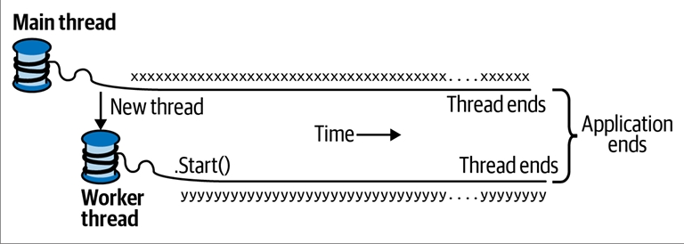

فصل چهاردهم: همزمانی و ناهمزمانی
بیشتر برنامهها نیاز دارند با بیش از یک رویداد که بهطور همزمان رخ میدهد سروکار داشته باشند (همزمانی یا Concurrency).
در این فصل، ما با پیشنیازهای ضروری شروع میکنیم، یعنی مبانی Threading (ایجاد و مدیریت رشتهها) و Tasks (وظایف)، و سپس اصول Asynchrony (ناهمزمانی) و توابع ناهمزمان در #C را با جزئیات توضیح میدهیم.
در فصل ۲۱ دوباره به موضوع Multithreading (چندرشتهای) با جزئیات بیشتر برمیگردیم و در فصل ۲۲ موضوع مرتبط یعنی Parallel Programming (برنامهنویسی موازی) را پوشش میدهیم.
🔹 مقدمه
در ادامه رایجترین سناریوهای همزمانی آورده شده است:
🖥️ نوشتن یک رابط کاربری پاسخگو
در برنامههای WPF، موبایل و Windows Forms باید کارهای زمانبر را بهصورت همزمان با کدی که رابط کاربری شما را اجرا میکند انجام دهید تا رابط کاربری همچنان پاسخگو باقی بماند.
🌐 پردازش همزمان درخواستها
روی یک سرور، درخواستهای کلاینت میتوانند بهطور همزمان برسند و بنابراین باید بهصورت موازی پردازش شوند تا Scalability (مقیاسپذیری) حفظ شود. اگر از ASP.NET Core یا Web API استفاده کنید، زماناجرا (Runtime) این کار را بهطور خودکار برای شما انجام میدهد.
بااینحال، همچنان باید نسبت به Shared State (وضعیت مشترک) آگاه باشید (برای نمونه، اثر استفاده از Static Variables برای کشکردن).
⚡ برنامهنویسی موازی
کدی که محاسبات سنگینی انجام میدهد میتواند روی رایانههای چندهستهای یا چندپردازندهای سریعتر اجرا شود، اگر حجم کار میان هستهها تقسیم شود. (فصل ۲۲ بهطور کامل به این موضوع اختصاص دارد.)
🔮 اجرای حدسی (Speculative Execution)
روی ماشینهای چندهستهای، گاهی میتوان با پیشبینی کاری که ممکن است نیاز به انجام آن باشد و انجام دادن آن از قبل، عملکرد را بهبود داد.
برنامه LINQPad از این تکنیک برای سرعتبخشیدن به ایجاد کوئریهای جدید استفاده میکند.
نوع دیگری از این روش این است که چند الگوریتم مختلف را بهطور موازی اجرا کنید که همگی یک وظیفه مشابه را حل میکنند. هرکدام زودتر تمام شود «برنده» خواهد بود. این روش زمانی مؤثر است که از قبل ندانید کدام الگوریتم سریعتر عمل خواهد کرد.
🧵 مکانیزم عمومی همزمانی: Multithreading
مکانیزم عمومیای که به یک برنامه اجازه میدهد بهطور همزمان کد را اجرا کند، Multithreading نام دارد.
Multithreading هم توسط CLR و هم توسط سیستمعامل پشتیبانی میشود و یک مفهوم بنیادین در همزمانی است.
بنابراین درک مبانی Threading، و بهویژه تأثیر رشتهها بر Shared State (وضعیت مشترک)، ضروری است.
🧩 Threading
یک Thread یا «رشته»، یک مسیر اجرای مستقل است که میتواند جدا از سایر مسیرها پیش برود.
هر رشته درون یک Process (فرایند) سیستمعامل اجرا میشود که محیطی ایزوله را برای اجرای یک برنامه فراهم میکند.
- در یک برنامه تکرشتهای (Single-Threaded)، تنها یک رشته در محیط ایزوله پردازش اجرا میشود و بنابراین آن رشته دسترسی انحصاری به آن دارد.
- در یک برنامه چندرشتهای (Multi-Threaded)، چند رشته در یک فرایند واحد اجرا میشوند و یک محیط اجرایی مشترک (بهویژه حافظه) را با هم به اشتراک میگذارند.
این موضوع دلیل اصلی مفید بودن Multithreading است:
برای نمونه، یک رشته میتواند در پسزمینه دادهها را واکشی کند، درحالیکه رشته دیگر همان دادهها را بهمحض رسیدن نمایش دهد. این دادهها بهعنوان Shared State شناخته میشوند.
🛠️ ایجاد یک Thread
یک برنامه کلاینت (Console، WPF، UWP یا Windows Forms) در یک رشته منفرد که بهطور خودکار توسط سیستمعامل ساخته میشود (رشتهی اصلی یا Main Thread) شروع به کار میکند.
این برنامه تا زمانی که شما کاری خلاف آن انجام ندهید (یعنی رشتههای بیشتری بسازید، چه بهطور مستقیم و چه غیرمستقیم) بهصورت تکرشتهای باقی میماند.¹
برای ایجاد و شروع یک رشته جدید، باید یک شیء از نوع Thread بسازید و متد Start آن را فراخوانی کنید.
سادهترین سازنده (Constructor) برای Thread، یک ThreadStart Delegate میگیرد: متدی بدون پارامتر که نشان میدهد اجرای رشته از کجا آغاز شود.
📌 مثال
// توجه: همه نمونههای این فصل فرض میکنند که Namespaceهای زیر Import شدهاند:
using System;
using System.Threading;
Thread t = new Thread (WriteY); // ایجاد و راهاندازی یک رشته جدید
t.Start(); // اجرای متد WriteY روی رشته جدید
// همزمان، روی رشته اصلی هم کاری انجام میدهیم.
for (int i = 0; i < 1000; i++) Console.Write ("x");
void WriteY()
{
for (int i = 0; i < 1000; i++) Console.Write ("y");
}
📤 خروجی نمونه
xxxxxxxxxxxxxxxxyyyyyyyyyyyyyyyyyyyyyyyyyyyyyyyyyyyyy
xxxxxxxxxxxxxxxxxxxxxxxxxxxxxxxxxxxxxxxyyyyyyyyyyyyyy
yyyyyyyyyyyyyyyyyyyyyyyyyyyyyyyxxxxxxxxxxxxxxxxxxxxxx
xxxxxxxxxxxxxxxxxxxxxxxyyyyyyyyyyyyyyyyyyyyyyyyyyyyyy
yyyyyyyyyyyyyyxxxxxxxxxxxxxxxxxxxxxxxxxxxxxxxxxxxxxxx
...
رشته اصلی یک رشته جدید به نام t میسازد و روی آن متدی را اجرا میکند که کاراکتر y را بهطور تکراری چاپ میکند.
بهطور همزمان، رشته اصلی نیز کاراکتر x را بهطور تکراری چاپ میکند، همانطور که در شکل ۱۴-۱ نشان داده شده است.
- روی یک رایانه تکهستهای، سیستمعامل باید «بُرشهایی» از زمان (معمولاً حدود ۲۰ میلیثانیه در ویندوز) را به هر رشته اختصاص دهد تا همزمانی شبیهسازی شود. نتیجه این کار، بلاکهای تکراری از
xوyاست. - روی یک ماشین چندهستهای یا چندپردازندهای، دو رشته میتوانند واقعاً بهطور موازی اجرا شوند (با این شرط که دیگر پردازههای فعال روی رایانه هم در رقابت باشند).
بااینحال در این مثال همچنان بلاکهای تکراری ازxوyمشاهده میکنید، زیرا جزئیات ظریفی در مکانیزمی وجود دارد که Console درخواستهای همزمان را مدیریت میکند.

🔄 پیشامتیازدهی (Preemption)
وقتی اجرای یک Thread با اجرای کدی روی یک Thread دیگر در هم آمیخته میشود، گفته میشود که آن Thread Preempted (پیشامتیاز داده شده) است. این اصطلاح اغلب زمانی ظاهر میشود که بخواهیم توضیح دهیم چرا چیزی بهدرستی کار نکرده است!
🟢 وضعیت زنده بودن (IsAlive)
پس از شروع شدن، ویژگی (Property) IsAlive در یک Thread مقدار true را برمیگرداند تا زمانی که آن Thread پایان یابد.
یک Thread زمانی پایان مییابد که Delegateای که به سازندهی (Constructor) آن داده شده، اجرای خود را تمام کند. پس از پایان یافتن، یک Thread را نمیتوان دوباره راهاندازی کرد.
📝 نامگذاری Threadها
هر Thread یک ویژگی به نام Name دارد که میتوانید آن را برای اهداف Debugging تنظیم کنید.
این ویژگی در Visual Studio بسیار مفید است، زیرا نام Thread در Threads Window و نوار ابزار Debug Location نمایش داده میشود.
شما تنها یکبار میتوانید نام یک Thread را تنظیم کنید؛ هر تلاش دیگری برای تغییر نام، یک Exception ایجاد خواهد کرد.
🔍 دسترسی به Thread فعلی
ویژگی استاتیک Thread.CurrentThread رشتهای را که در حال حاضر در حال اجراست برمیگرداند:
Console.WriteLine (Thread.CurrentThread.Name);
⏳ Join و Sleep
📌 Join
میتوانید با فراخوانی متد Join منتظر بمانید تا یک Thread دیگر پایان یابد:
Thread t = new Thread (Go);
t.Start();
t.Join();
Console.WriteLine ("Thread t has ended!");
void Go()
{
for (int i = 0; i < 1000; i++) Console.Write ("y");
}
این کد ابتدا ۱۰۰۰ بار y چاپ میکند و بلافاصله پس از آن متن "Thread t has ended!" نمایش داده میشود.
همچنین میتوانید هنگام فراخوانی Join یک Timeout مشخص کنید (برحسب میلیثانیه یا یک TimeSpan). در این صورت متد مقدار true برمیگرداند اگر Thread پایان یافته باشد، یا false اگر زمان تمام شده باشد.
📌 Sleep
متد Thread.Sleep اجرای Thread فعلی را برای مدتی مشخص متوقف میکند:
Thread.Sleep (TimeSpan.FromHours (1)); // توقف برای ۱ ساعت
Thread.Sleep (500); // توقف برای ۵۰۰ میلیثانیه
فراخوانی Thread.Sleep(0) بلافاصله بُرش زمانی (Time Slice) فعلی را آزاد کرده و داوطلبانه CPU را در اختیار سایر Threadها قرار میدهد.
متد Thread.Yield() نیز همین کار را انجام میدهد، با این تفاوت که CPU را تنها به Threadهایی واگذار میکند که روی همان پردازنده در حال اجرا هستند.
- استفاده از
Sleep(0)یاYieldگاهی در کدهای Production برای بهینهسازیهای پیشرفتهی عملکرد مفید است. - اینها همچنین ابزارهای عالی Diagnostic (عیبیابی) هستند: اگر اضافه کردن
Thread.Yield()در هرجای کد شما باعث خراب شدن برنامه شود، تقریباً مطمئن باشید که یک Bug در کدتان وجود دارد.
🚫 Block شدن یک Thread
وقتی اجرای یک Thread به دلایلی متوقف شود، گفته میشود که آن Thread Blocked است؛ مثلاً هنگام اجرای Sleep یا منتظر ماندن برای پایان یافتن یک Thread دیگر با Join.
- یک Thread Blocked بلافاصله بُرش زمانی پردازندهی خود را آزاد میکند.
- از آن لحظه به بعد، هیچ زمانی از CPU مصرف نمیکند تا زمانی که شرط Block شدن برطرف شود.
برای بررسی اینکه آیا یک Thread در حالت Block است میتوانید از ویژگی ThreadState استفاده کنید:
bool blocked = (someThread.ThreadState & ThreadState.WaitSleepJoin) != 0;
⚙️ ThreadState
ویژگی ThreadState یک Flags Enum است که سه «لایه» داده را بهصورت Bitwise ترکیب میکند.
بااینحال بیشتر مقادیر آن زائد، بلااستفاده یا منسوخ شدهاند.
روش توسعهیافتهی زیر یک مقدار ThreadState را به یکی از چهار مقدار مفید سادهسازی میکند:
- Unstarted
- Running
- WaitSleepJoin
- Stopped
public static ThreadState Simplify (this ThreadState ts)
{
return ts & (ThreadState.Unstarted |
ThreadState.WaitSleepJoin |
ThreadState.Stopped);
}
🔎 ویژگی ThreadState برای مقاصد Diagnostic مفید است، اما برای Synchronization مناسب نیست، زیرا وضعیت یک Thread میتواند بین بررسی مقدار ThreadState و عملکردن بر اساس آن تغییر کند.
هنگامیکه یک Thread Block یا Unblock میشود، سیستمعامل یک Context Switch انجام میدهد. این عمل هزینهی اندکی دارد (معمولاً یک یا دو میکروثانیه).
⚖️ I/O-bound در مقابل Compute-bound
-
عملیاتی که بیشتر زمان خود را در انتظار رخدادن چیزی میگذراند، I/O-bound نامیده میشود.
نمونه: دانلود یک صفحه وب یا فراخوانیConsole.ReadLine.
(عملیات I/O-bound معمولاً شامل ورودی یا خروجی هستند، اما این یک الزام قطعی نیست:Thread.Sleepهم I/O-bound محسوب میشود.) -
در مقابل، عملیاتی که بیشتر زمان خود را صرف انجام کارهای سنگین CPU میکند، Compute-bound نام دارد.
🔄 Blocking در مقابل Spinning
یک عملیات I/O-bound میتواند به دو صورت عمل کند:
- انتظار همگام (Synchronous) روی Thread فعلی تا پایان عملیات (مثال:
Console.ReadLine،Thread.SleepیاThread.Join). - عمل ناهمگام (Asynchronous) که با پایان عملیات در آینده، یک Callback اجرا میکند (بیشتر در ادامه این فصل توضیح داده میشود).
🔁 Blocking با حلقه Sleep
عملیاتهای I/O-bound که بهصورت همگام منتظر میمانند بیشتر زمان خود را در حالت Block سپری میکنند.
گاهی این انتظار به شکل یک حلقهی Sleep پیادهسازی میشود:
while (DateTime.Now < nextStartTime)
Thread.Sleep (100);
🔁 Spinning (چرخش مداوم)
گزینهی دیگر این است که یک Thread بهطور مداوم بچرخد:
while (DateTime.Now < nextStartTime);
این کار بهشدت وقت CPU را تلف میکند. از دید CLR و سیستمعامل، Thread در حال انجام یک محاسبه مهم است، بنابراین منابع به آن اختصاص داده میشود. در عمل، ما یک عملیات I/O-bound را به یک عملیات Compute-bound تبدیل کردهایم.
✨ نکات ظریف درباره Spinning در برابر Blocking
۱. Spinning کوتاهمدت گاهی میتواند مؤثر باشد، زمانی که انتظار دارید شرط بهزودی (مثلاً در چند میکروثانیه) برقرار شود. این کار از سربار و تأخیر Context Switch جلوگیری میکند.
📌 برای این منظور، .NET متدها و کلاسهای خاصی مثل SpinLock و SpinWait را ارائه میدهد.
۲. Blocking هم بیهزینه نیست. هر Thread حدود ۱ مگابایت حافظه را برای تمام مدت عمرش اشغال میکند و برای CLR و سیستمعامل بار مدیریتی مداوم ایجاد میکند.
به همین دلیل، Blocking در برنامههای بسیار I/O-bound که باید صدها یا هزاران عملیات همزمان را مدیریت کنند میتواند مشکلساز شود.
🔑 در چنین شرایطی، برنامهها باید از رویکرد Callback-based استفاده کنند، یعنی هنگام انتظار، Thread خود را بهطور کامل آزاد کنند.
این دقیقاً (بخشی از) هدف الگوهای Asynchronous است که در ادامه بررسی خواهیم کرد.
🔀 وضعیت محلی در مقابل وضعیت مشترک
CLR به هر Thread پشتهی حافظهی مخصوص خودش را اختصاص میدهد، بنابراین متغیرهای محلی از هم جدا نگه داشته میشوند.
در مثال زیر، متدی با یک متغیر محلی تعریف میکنیم و سپس آن متد را بهطور همزمان روی Thread اصلی و یک Thread جدید فراخوانی میکنیم:
new Thread (Go).Start(); // فراخوانی Go() روی یک Thread جدید
Go(); // فراخوانی Go() روی Thread اصلی
void Go()
{
// تعریف و استفاده از متغیر محلی - 'cycles'
for (int cycles = 0; cycles < 5; cycles++)
Console.Write ('?');
}
برای هر Thread یک نسخه جداگانه از متغیر cycles روی پشتهی حافظهاش ساخته میشود. بنابراین، خروجی طبق انتظار ۱۰ علامت سؤال خواهد بود.
🤝 اشتراک داده بین Threadها
Threadها دادهها را در صورتی به اشتراک میگذارند که مرجع (Reference) مشترکی به یک شیء یا متغیر داشته باشند:
bool _done = false;
new Thread (Go).Start();
Go();
void Go()
{
if (!_done)
{
_done = true;
Console.WriteLine ("Done");
}
}
در این مثال، هر دو Thread متغیر _done را به اشتراک میگذارند، پس خروجی "Done" فقط یکبار چاپ میشود.
📌 اشتراکگذاری از طریق Lambda
متغیرهای محلی که در یک Lambda Expression گرفته (Capture) میشوند نیز میتوانند مشترک باشند:
bool done = false;
ThreadStart action = () =>
{
if (!done)
{
done = true;
Console.WriteLine ("Done");
}
};
new Thread (action).Start();
action();
📌 اشتراکگذاری از طریق Fieldها
بهطور رایجتر، Fieldها برای اشتراک داده میان Threadها استفاده میشوند.
var tt = new ThreadTest();
new Thread (tt.Go).Start();
tt.Go();
class ThreadTest
{
bool _done;
public void Go()
{
if (!_done)
{
_done = true;
Console.WriteLine ("Done");
}
}
}
📌 اشتراکگذاری از طریق Static Field
راه دیگر برای اشتراک دادهها میان Threadها استفاده از Static Fieldهاست:
class ThreadTest
{
static bool _done; // Static Fieldها میان همه Threadها در یک Process مشترک هستند
static void Main()
{
new Thread (Go).Start();
Go();
}
static void Go()
{
if (!_done)
{
_done = true;
Console.WriteLine ("Done");
}
}
}
⚠️ مشکل Thread Safety
هر چهار مثال بالا مفهوم کلیدی دیگری را نشان میدهند: ایمنی Threadها (یا بهتر بگوییم، نبود آن!).
در حقیقت خروجی نامعین است: این امکان (هرچند نادر) وجود دارد که "Done" دوبار چاپ شود.
اگر ترتیب دستورات در متد Go را عوض کنیم، احتمال چاپ دوباره "Done" بهشدت افزایش مییابد:
static void Go()
{
if (!_done)
{
Console.WriteLine ("Done");
_done = true;
}
}
مشکل اینجاست که یک Thread ممکن است در حال بررسی شرط if باشد در همان لحظهای که Thread دیگر دارد WriteLine را اجرا میکند—قبل از آنکه فرصت کند مقدار _done را برابر true کند.
این مثال یکی از راههای متعدد را نشان میدهد که در آن Shared Writable State (وضعیت مشترک قابلنوشتن) میتواند خطاهای متناوبی ایجاد کند؛ همان خطاهایی که Multithreading بهبدنامی برای آنها مشهور است.
🔒 قفلگذاری و ایمنی Threadها
برای حل مثال قبلی میتوانیم هنگام خواندن و نوشتن روی Field مشترک، یک Exclusive Lock بگیریم.
#C برای این منظور دستور lock را فراهم کرده است:
class ThreadSafe
{
static bool _done;
static readonly object _locker = new object();
static void Main()
{
new Thread (Go).Start();
Go();
}
static void Go()
{
lock (_locker)
{
if (!_done)
{
Console.WriteLine ("Done");
_done = true;
}
}
}
}
وقتی دو Thread همزمان برای گرفتن یک Lock (که میتواند روی هر شیء از نوع Reference باشد؛ در اینجا _locker) رقابت کنند، یکی از آنها منتظر میماند (Blocked) تا Lock آزاد شود.
این کار تضمین میکند که فقط یک Thread میتواند همزمان وارد بلوک کد شود، و "Done" فقط یکبار چاپ خواهد شد.
کدی که به این شکل محافظت شده باشد—در برابر عدم قطعیت در یک محیط چندرشتهای—به آن Thread Safe میگویند.
⚡ عملیات ناامن حتی در سادهترین حالات
حتی عمل سادهی Auto-increment یک متغیر هم Thread Safe نیست:
عبارت x++ روی پردازنده بهصورت چند عمل جداگانه (خواندن، افزایش و نوشتن) اجرا میشود.
بنابراین اگر دو Thread همزمان x++ را خارج از یک Lock اجرا کنند، متغیر ممکن است فقط یکبار افزایش یابد بهجای دوبار (یا بدتر، مقدار x ممکن است در شرایط خاص بهشکل تکهتکه و نادرست ذخیره شود).
🚫 محدودیتهای قفلگذاری
قفلگذاری گلوله نقرهای برای حل همه مشکلات Thread Safety نیست:
- ممکن است فراموش کنید که در حین دسترسی به یک Field از Lock استفاده کنید.
- قفلگذاری خودش میتواند مشکلاتی مانند Deadlock ایجاد کند.
یک نمونه خوب برای استفاده از قفلگذاری، دسترسی به یک Cache در حافظه است که برای نگهداری اشیای پایگاه داده در یک برنامهی ASP.NET استفاده میشود.
این نوع برنامه ساده است و بهدرستی کار میکند و هیچ خطری برای Deadlock وجود ندارد.
نمونهای از این موضوع را در بخش "Thread Safety in Application Servers" (صفحه ۹۰۱) خواهیم دید.
📤 ارسال داده به یک Thread
گاهی لازم است هنگام شروع یک Thread، آرگومانهایی به متد ورودی آن ارسال کنید.
سادهترین راه برای این کار استفاده از Lambda Expression است که متد را با آرگومانهای مورد نظر فراخوانی میکند:
Thread t = new Thread ( () => Print ("Hello from t!") );
t.Start();
void Print (string message) => Console.WriteLine (message);
با این روش، میتوانید هر تعداد آرگومان را به متد ارسال کنید.
حتی میتوانید کل پیادهسازی را در یک Lambda چنددستورهای قرار دهید:
new Thread (() =>
{
Console.WriteLine ("I'm running on another thread!");
Console.WriteLine ("This is so easy!");
}).Start();
🔄 روش دیگر: استفاده از Thread.Start
روش جایگزین (اما کمتر انعطافپذیر) این است که آرگومان را به متد Start ارسال کنیم:
Thread t = new Thread (Print);
t.Start ("Hello from t!");
void Print (object messageObj)
{
string message = (string) messageObj; // نیاز به Cast داریم
Console.WriteLine (message);
}
این روش کار میکند چون سازندهی Thread برای دو نوع Delegate Overload شده است:
public delegate void ThreadStart();
public delegate void ParameterizedThreadStart (object obj);
🧩 Lambda Expressions و متغیرهای Captured
همانطور که دیدیم، Lambda Expression راحتترین و قدرتمندترین روش برای ارسال داده به یک Thread است.
اما باید مراقب باشید که بعد از شروع Thread، بهطور ناخواسته متغیرهای Captured را تغییر ندهید.
برای نمونه:
for (int i = 0; i < 10; i++)
new Thread (() => Console.Write (i)).Start();
خروجی نامعین است! مثالی از خروجی:
0223557799
مشکل این است که متغیر i در طول اجرای حلقه به یک محل حافظهی مشترک اشاره دارد.
بنابراین هر Thread، متدی را روی متغیری فراخوانی میکند که ممکن است همزمان در حال تغییر باشد!
✅ راهحل: استفاده از یک متغیر موقت:
for (int i = 0; i < 10; i++)
{
int temp = i;
new Thread (() => Console.Write (temp)).Start();
}
حالا هر عدد از ۰ تا ۹ دقیقاً یکبار چاپ میشود.
(البته ترتیب هنوز مشخص نیست، چون Threadها میتوانند در زمانهای نامعین شروع شوند.)
این مشکل مشابه موضوع "Captured Variables" (صفحه ۴۳۴) است؛
مشکل هم به قوانین C# در Capture متغیرهای حلقه مربوط میشود و هم به Multithreading.
در این روش، متغیر temp محلی به هر Iteration حلقه است، پس هر Thread حافظهای متفاوت Capture میکند و مشکلی پیش نمیآید.
یک مثال سادهتر برای نمایش مشکل:
string text = "t1";
Thread t1 = new Thread ( () => Console.WriteLine (text) );
text = "t2";
Thread t2 = new Thread ( () => Console.WriteLine (text) );
t1.Start(); t2.Start();
چون هر دو Lambda متغیر text را Capture کردهاند، خروجی دوبار "t2" خواهد بود.
⚠️ مدیریت استثناها در Threadها
بلوکهای try/catch/finally که هنگام ایجاد یک Thread در جریان هستند، هیچ تأثیری روی آن Thread هنگام اجرا ندارند.
مثال:
try
{
new Thread (Go).Start();
}
catch (Exception ex)
{
// اینجا هیچوقت اجرا نمیشود!
Console.WriteLine ("Exception!");
}
void Go() { throw null; } // پرتاب NullReferenceException
در اینجا، Thread جدید با یک Unhandled NullReferenceException مواجه میشود.
این رفتار منطقی است، چون هر Thread مسیر اجرای مستقل خود را دارد.
✅ راهحل این است که Exception Handler را داخل متد Go قرار دهیم:
new Thread (Go).Start();
void Go()
{
try
{
...
throw null; // اینجا خطا پرتاب میشود
...
}
catch (Exception ex)
{
// معمولاً Exception را Log میکنیم یا به یک Thread دیگر سیگنال میدهیم
...
}
}
در برنامههای واقعی، باید در تمام متدهای ورودی Thread Exception Handler داشته باشید—همانطور که در Thread اصلی برنامه هم نیاز دارید.
چون یک Exception مدیریتنشده باعث بستهشدن کل برنامه و نمایش یک پنجرهی ناخوشایند میشود.
🗂️ مدیریت متمرکز استثناها
در برنامههای WPF، UWP و Windows Forms میتوانید برای مدیریت سراسری Exceptionها مشترک شوید:
Application.DispatcherUnhandledExceptionApplication.ThreadException
این رویدادها پس از وقوع یک Exception مدیریتنشده در هر بخش برنامه که از طریق Message Loop فراخوانی شده است (یعنی تمام کدی که روی Thread اصلی در حال اجراست) فعال میشوند.
این روش بهعنوان یک پشتوانه برای Log کردن و گزارش باگها مفید است (هرچند برای Exceptionهای مدیریتنشده روی Worker Threadها فعال نمیشود).
مدیریت این رویدادها از بستهشدن برنامه جلوگیری میکند؛ البته ممکن است تصمیم بگیرید برنامه را مجدداً راهاندازی کنید تا از حالت ناپایدار احتمالی جلوگیری شود.
🌗 Foreground در مقابل Background Threads
بهطور پیشفرض، Threadهایی که شما بهطور صریح ایجاد میکنید، Foreground هستند.
🔹 Foreground Thread باعث میشود برنامه تا زمانی که حتی یکی از آنها در حال اجراست، زنده بماند.
🔹 Background Thread چنین اثری ندارد؛ بهمحض اینکه همهی Foreground Threadها تمام شوند، برنامه پایان مییابد و هر Background Threadی که هنوز در حال اجراست، ناگهانی قطع میشود.
⚠️ وضعیت Foreground یا Background هیچ ارتباطی با Priority (اولویت تخصیص زمان پردازش) ندارد.
میتوانید وضعیت یک Thread را از طریق ویژگی IsBackground پرسوجو یا تغییر دهید:
static void Main (string[] args)
{
Thread worker = new Thread ( () => Console.ReadLine() );
if (args.Length > 0) worker.IsBackground = true;
worker.Start();
}
- اگر برنامه بدون آرگومان اجرا شود، Thread بهصورت Foreground خواهد بود و منتظر میماند تا کاربر Enter بزند.
- اگر برنامه با آرگومان اجرا شود، Thread بهصورت Background است و برنامه تقریباً بلافاصله تمام میشود (و
ReadLineقطع میگردد).
❌ توجه: وقتی برنامه اینگونه پایان یابد، بلاکهای finally در پشتهی اجرای Background Thread اجرا نمیشوند.
بنابراین اگر برای پاکسازی (مثل حذف فایلهای موقت) از finally یا using استفاده میکنید، باید مطمئن شوید هنگام خروج از برنامه، این Threadها بهطور صحیح به پایان برسند (مثلاً با Join یا Signaling). همیشه هم باید Timeout تعیین کنید تا در صورت لجبازی یک Thread، برنامه بسته نشود.
🎚️ اولویت Threads
ویژگی Priority تعیین میکند یک Thread چه میزان زمان پردازش نسبت به سایر Threadها دریافت کند:
enum ThreadPriority { Lowest, BelowNormal, Normal, AboveNormal, Highest }
این موضوع زمانی اهمیت دارد که چندین Thread همزمان فعال باشند.
- بالا بردن اولویت میتواند باعث شود Threadهای دیگر گرسنه بمانند.
- اگر میخواهید Thread شما اولویتی بالاتر از سایر Processها داشته باشد، باید اولویت Process را هم بالا ببرید:
using Process p = Process.GetCurrentProcess();
p.PriorityClass = ProcessPriorityClass.High;
این کار برای پردازشهای غیر-UI کوچک با نیاز به واکنش سریع مناسب است. اما در برنامههای پرمصرف (مخصوصاً با UI)، افزایش اولویت Process میتواند کل سیستم را کند کند.
📡 Signaling
گاهی لازم است یک Thread منتظر بماند تا از Threadهای دیگر سیگنال دریافت کند.
سادهترین سازه برای این کار ManualResetEvent است:
WaitOne→ Thread فعلی را مسدود میکند.Set→ سیگنال را باز میکند و منتظرها آزاد میشوند.
مثال:
var signal = new ManualResetEvent (false);
new Thread (() =>
{
Console.WriteLine ("Waiting for signal...");
signal.WaitOne();
signal.Dispose();
Console.WriteLine ("Got signal!");
}).Start();
Thread.Sleep(2000);
signal.Set(); // سیگنال باز شد
بعد از فراخوانی Set، سیگنال باز میماند تا زمانی که دوباره Reset شود.
CLR سازههای Signaling متنوعی دارد که در فصل ۲۱ بررسی میشوند.
🖥️ Threading در برنامههای Rich Client
در برنامههای WPF، UWP و Windows Forms، اجرای عملیات طولانی روی Thread اصلی باعث هنگ کردن UI میشود، چون همان Thread مسئول پردازش ورودیها (کیبورد/ماوس) و رندر رابط کاربری است.
راهحل:
- ایجاد Worker Thread برای کارهای زمانبر.
- سپس انتقال نتیجه به Thread اصلی برای بهروزرسانی UI.
⚠️ همهی این فریمورکها مدل Threading دارند که فقط اجازه میدهد UI توسط همان Threadی دسترسی یابد که آن را ساخته است (معمولاً Thread اصلی). در غیر این صورت، رفتار نامشخص یا Exception رخ میدهد.
برای بهروزرسانی UI از Worker Thread باید درخواست را به UI Thread Marshal کنید:
- WPF → با
Dispatcher.BeginInvokeیاDispatcher.Invoke - UWP → با
Dispatcher.RunAsyncیاDispatcher.Invoke - Windows Forms → با
Control.BeginInvokeیاControl.Invoke
BeginInvoke/RunAsync Delegate را در صف پیام UI میگذارند (غیرمسدودکننده).
Invoke همان کار را میکند، اما تا پردازش Delegate توسط UI Thread صبر میکند (مسدودکننده و با امکان بازگشت مقدار).
📝 مثال در WPF
فرض کنید یک پنجره WPF داریم که شامل TextBoxی به نام txtMessage است. میخواهیم پس از یک کار زمانبر، متن آن را تغییر دهیم:
partial class MyWindow : Window
{
public MyWindow()
{
InitializeComponent();
new Thread (Work).Start();
}
void Work()
{
Thread.Sleep (5000); // شبیهسازی کار زمانبر
UpdateMessage ("The answer");
}
void UpdateMessage (string message)
{
Action action = () => txtMessage.Text = message;
Dispatcher.BeginInvoke (action);
}
}
🔹 پنجره فوراً پاسخگو خواهد بود.
🔹 بعد از ۵ ثانیه، TextBox بهروزرسانی میشود.
در Windows Forms هم مشابه است، با این تفاوت که باید از متد BeginInvoke فرم استفاده کنید:
void UpdateMessage (string message)
{
Action action = () => txtMessage.Text = message;
this.BeginInvoke (action);
}
🪟 چندین UI Thread
در یک برنامه میتوان چندین UI Thread داشت، هرکدام مالک یک پنجرهی مستقل.
این معمولاً در SDI Applications (مثل Microsoft Word) استفاده میشود. هر پنجرهی مستقل میتواند UI Thread خودش را داشته باشد تا پاسخگویی بیشتری به کاربر ارائه دهد.
کانتکستهای همگامسازی (Synchronization Contexts) 🔄
در فضای نام System.ComponentModel کلاسی به نام SynchronizationContext وجود دارد که امکان عمومیت دادن به Thread Marshaling را فراهم میکند.
📱💻 در APIهای مربوط به rich-client برای موبایل و دسکتاپ (یعنی UWP، WPF و Windows Forms) هرکدام زیرکلاسی از SynchronizationContext تعریف و ایجاد میکنند. شما میتوانید این نمونه را از طریق ویژگی (Property) ایستا به نام SynchronizationContext.Current (وقتی روی یک UI thread در حال اجرا هستید) بهدست آورید.
گرفتن این property به شما اجازه میدهد بعداً از داخل یک worker thread به کنترلهای UI “post” کنید:
partial class MyWindow : Window
{
SynchronizationContext _uiSyncContext;
public MyWindow()
{
InitializeComponent();
// گرفتن کانتکست همگامسازی برای UI thread جاری:
_uiSyncContext = SynchronizationContext.Current;
new Thread(Work).Start();
}
void Work()
{
Thread.Sleep(5000); // شبیهسازی یک کار زمانبر
UpdateMessage("The answer");
}
void UpdateMessage(string message)
{
// Marshal کردن delegate به UI thread:
_uiSyncContext.Post(_ => txtMessage.Text = message, null);
}
}
🔑 این روش مفید است چون در همهی APIهای رابط کاربری rich-client به یک شکل کار میکند.
فراخوانی Post معادل فراخوانی BeginInvoke روی یک Dispatcher یا Control است. همچنین متدی به نام Send وجود دارد که معادل Invoke است.
Thread Pool 🏊♂️
وقتی یک thread جدید ایجاد میکنید، چند صد میکروثانیه صرف آمادهسازی چیزهایی مثل stack متغیرهای محلی میشود. Thread Pool این overhead را کاهش میدهد چون شامل مجموعهای از threadهای از پیش ساختهشده و قابل بازیافت است.
🔹 استفاده از Thread Pool برای برنامهنویسی موازی کارآمد و Concurrency ریزدانهای ضروری است. این کار اجازه میدهد عملیاتهای کوتاه اجرا شوند بدون اینکه overhead ایجاد Thread زیاد شود.
اما هنگام استفاده از pooled threadها باید چند نکته را در نظر بگیرید:
- 🚫 نمیتوانید خاصیت Name را برای pooled threadها تنظیم کنید (اشکالزدایی سختتر میشود، گرچه در Visual Studio میتوانید یک description به آنها اضافه کنید).
- 🕑 pooled threadها همیشه background thread هستند.
- ❌ بلاک کردن pooled threadها میتواند عملکرد را کاهش دهد (نگاه کنید به «Hygiene in the thread pool»).
میتوانید Priority یک pooled thread را تغییر دهید؛ وقتی thread آزاد شود و به Pool برگردد، مقدارش دوباره روی Normal تنظیم میشود.
برای بررسی اینکه آیا در حال حاضر روی یک pooled thread در حال اجرا هستید یا نه، میتوانید از خاصیت Thread.CurrentThread.IsThreadPoolThread استفاده کنید.
ورود به Thread Pool 🚀
سادهترین راه اجرای صریح یک کار در thread pool استفاده از Task.Run است (این موضوع را در بخش بعدی کاملتر توضیح میدهیم):
// Task در فضای نام System.Threading.Tasks است
Task.Run(() => Console.WriteLine("Hello from the thread pool"));
قبل از نسخهی .NET Framework 4.0 که Task وجود نداشت، روش رایج استفاده از ThreadPool.QueueUserWorkItem بود:
ThreadPool.QueueUserWorkItem(notUsed => Console.WriteLine("Hello"));
همچنین استفادههای زیر بهطور ضمنی از thread pool بهره میبرند:
- 🌐 سرورهای اپلیکیشن ASP.NET Core و Web API
- ⏱️ کلاسهای System.Timers.Timer و System.Threading.Timer
- 📊 ساختارهای برنامهنویسی موازی (توضیح در فصل 22)
- ⚙️ کلاس قدیمی BackgroundWorker
رعایت بهداشت در Thread Pool 🧹
Thread Pool وظیفه دیگری هم دارد: جلوگیری از ایجاد oversubscription.
❗ Oversubscription یعنی تعداد threadهای فعال بیشتر از تعداد هستههای CPU باشد و سیستمعامل مجبور شود بین آنها time-slice انجام دهد. این کار کارایی را کاهش میدهد چون context switch پرهزینه است و cacheهای CPU را هم بیاعتبار میکند.
✅ CLR از oversubscription جلوگیری میکند با:
- صفبندی (queue) کردن تسکها
- و کنترل شروع آنها
اول به اندازه تعداد هستههای سختافزاری تسکها را بهطور همزمان اجرا میکند، سپس با استفاده از یک الگوریتم hill-climbing سطح Concurrency را تنظیم میکند. اگر throughput بهتر شود، در همان جهت ادامه میدهد وگرنه مسیرش را عوض میکند.
این استراتژی در صورتی بهترین عملکرد را دارد که:
- 🕒 کارها کوتاهمدت باشند (کمتر از ۲۵۰ میلیثانیه، و ترجیحاً زیر ۱۰۰ میلیثانیه).
- 🚫 کارهایی که بیشتر وقتشان را در حالت Blocked هستند، غالب نباشند.
بلاک شدن مشکلساز است چون CLR تصور میکند CPU درگیر است. CLR هوشمند است و برای جبران threadهای بیشتری وارد Pool میکند؛ اما این کار میتواند دوباره به oversubscription منجر شود و همچنین باعث تأخیر (latency) شود، مخصوصاً در ابتدای اجرای اپلیکیشن (بیشتر در سیستمعاملهای client که مصرف منابع پایینتری ترجیح داده میشود).
👌 رعایت بهداشت در Thread Pool وقتی اهمیت بیشتری دارد که بخواهید CPU را بهطور کامل استفاده کنید (مثلاً با استفاده از APIهای برنامهنویسی موازی در فصل 22).
تسکها (Tasks) ⚡
🔹 یک Thread ابزاری سطح پایین برای ایجاد Concurrency است و محدودیتهایی دارد، از جمله:
- 📥 اگرچه فرستادن داده به داخل یک Thread که ایجاد کردهاید ساده است، گرفتن یک مقدار بازگشتی (return value) از Threadی که Join کردهاید آسان نیست. باید یک فیلد مشترک تنظیم کنید. همچنین اگر عملیات یک Exception پرتاب کند، گرفتن و منتقل کردن آن هم دردسر دارد.
- 🔄 نمیتوانید به Thread بگویید وقتی تمام شد چیزی دیگری را شروع کند؛ بلکه باید آن را Join کنید (که باعث بلاک شدن Thread خودتان میشود).
این محدودیتها باعث میشوند Concurrency ریزدانهای (fine-grained) سخت شود؛ یعنی ترکیب عملیاتهای کوچکتر برای ساخت عملیاتهای همزمان بزرگتر مشکل است (که برای برنامهنویسی Asynchronous حیاتی است). در نتیجه نیاز به synchronization دستی (مثل Locking، Signaling و غیره) بیشتر میشود که خودش مشکلات دیگری دارد.
همچنین استفاده مستقیم از Threadها اثرات منفی روی کارایی دارد (توضیح در بخش «Thread Pool»). اگر نیاز به اجرای صدها یا هزاران عملیات I/O همزمان داشته باشید، رویکرد Threadمحور باعث مصرف صدها یا هزاران مگابایت حافظه صرفاً برای overhead مربوط به Threadها میشود.
✅ کلاس Task به همه این مشکلات کمک میکند. Task نسبت به Thread یک انتزاع سطح بالاتر است؛ یعنی نشاندهنده یک عملیات همزمان است که ممکن است پشتیبانیشده توسط Thread باشد یا نباشد.
ویژگیها:
- 🔗 Taskها ترکیبپذیر (compositional) هستند (میتوانید آنها را با استفاده از Continuationها به هم زنجیر کنید).
- 🏊 میتوانند از Thread Pool استفاده کنند تا زمان شروع را کم کنند.
- 📞 با استفاده از TaskCompletionSource میتوانند رویکرد Callback را پیادهسازی کنند که اصلاً نیازی به Threadها ندارد (مناسب برای عملیات I/O-bound).
کلاسهای Task در .NET Framework 4.0 بهعنوان بخشی از کتابخانه برنامهنویسی موازی معرفی شدند، و بعداً با awaiters بهبود پیدا کردند تا در سناریوهای عمومی Concurrency هم خوب کار کنند. آنها همچنین پایهی توابع Asynchronous در C# هستند.
(در این بخش، ویژگیهای Task مرتبط با برنامهنویسی موازی را کنار میگذاریم و در فصل 22 به آنها میپردازیم.)
شروع یک Task ▶️
سادهترین راه برای شروع یک Task پشتیبانیشده توسط Thread استفاده از متد ایستای Task.Run است (کلاس Task در فضای نام System.Threading.Tasks است):
Task.Run(() => Console.WriteLine("Foo"));
بهطور پیشفرض، Taskها روی Thread Pool اجرا میشوند که background thread هستند.
یعنی وقتی main thread تمام شود، همه Taskهایی که ساختهاید هم متوقف میشوند.
پس در یک Console Application، باید main thread را بعد از شروع Task بلاک کنید (مثلاً با Wait روی Task یا با Console.ReadLine):
Task.Run(() => Console.WriteLine("Foo"));
Console.ReadLine();
در LINQPad نیازی به Console.ReadLine نیست، چون پروسهی LINQPad بهطور خودکار background threadها را زنده نگه میدارد.
فراخوانی Task.Run تقریباً شبیه به ایجاد یک Thread است:
new Thread(() => Console.WriteLine("Foo")).Start();
اما Task.Run یک Task object برمیگرداند که میتوانیم وضعیت پیشرفت آن را مانیتور کنیم (مشابه Thread object).
توجه کنید که بعد از Task.Run دیگر Start نمیزنیم چون این متد Hot Task ایجاد میکند. (میتوانید با سازندهی Task یک Cold Task بسازید، اما در عمل کماستفاده است.)
میتوانید وضعیت اجرای Task را از طریق خاصیت Status بررسی کنید.
Wait ⏳
فراخوانی Wait روی یک Task باعث بلاک شدن میشود تا Task کامل شود (مشابه فراخوانی Join روی یک Thread):
Task task = Task.Run(() =>
{
Thread.Sleep(2000);
Console.WriteLine("Foo");
});
Console.WriteLine(task.IsCompleted); // False
task.Wait(); // تا تکمیل Task بلاک میشود
متد Wait امکان تعیین Timeout و CancellationToken را هم میدهد (توضیح در بخش «Cancellation» صفحه 681).
Long-running Tasks 🐢
بهطور پیشفرض، CLR تسکها را روی pooled threads اجرا میکند که برای کارهای کوتاهمدت و compute-bound ایدهآل است.
برای کارهای بلندمدت یا blocking میتوانید مانع استفاده از pooled thread شوید:
Task task = Task.Factory.StartNew(() => ...,
TaskCreationOptions.LongRunning);
اجرای یک تسک بلندمدت روی یک pooled thread مشکلی ندارد؛ اما اگر چندین تسک بلندمدت موازی اجرا شوند (خصوصاً آنهایی که Block میشوند)، عملکرد کاهش مییابد.
راهکارهای بهتر در این حالت:
- اگر تسکها I/O-bound هستند: از TaskCompletionSource و توابع Asynchronous برای پیادهسازی Concurrency با Callbackها استفاده کنید.
- اگر تسکها Compute-bound هستند: از یک Producer/Consumer Queue استفاده کنید تا Concurrency را کنترل کرده و جلوی گرسنگی سایر Threadها و پروسهها را بگیرید (توضیح در «Producer/Consumer Queue» صفحه 970).
بازگرداندن مقادیر 🔢
کلاس Task یک زیرکلاس جنریک به نام Task
میتوانید با دادن یک Func
Task<int> task = Task.Run(() =>
{
Console.WriteLine("Foo");
return 3;
});
int result = task.Result; // بلاک میشود تا Task تمام شود
Console.WriteLine(result); // 3
نمونه: محاسبه تعداد اعداد اول در سه میلیون عدد اول:
Task<int> primeNumberTask = Task.Run(() =>
Enumerable.Range(2, 3000000)
.Count(n => Enumerable.Range(2, (int)Math.Sqrt(n)-1)
.All(i => n % i > 0)));
Console.WriteLine("Task running...");
Console.WriteLine("The answer is " + primeNumberTask.Result);
خروجی:
Task running...
The answer is 216816
مدیریت Exceptionها ⚠️
🔮 Task
برخلاف Threadها، تسکها Exceptionها را راحت منتقل میکنند.
اگر کد داخل Task یک Exception مدیریتنشده پرتاب کند:
- اگر Wait کنید یا به Result دسترسی بزنید، Exception دوباره پرتاب میشود.
// شروع یک Task که NullReferenceException پرتاب میکند:
Task task = Task.Run(() => { throw null; });
try
{
task.Wait();
}
catch (AggregateException aex)
{
if (aex.InnerException is NullReferenceException)
Console.WriteLine("Null!");
else
throw;
}
🧩 CLR Exception را در یک AggregateException بستهبندی میکند تا با سناریوهای برنامهنویسی موازی همخوانی داشته باشد (توضیح در فصل 22).
میتوانید بدون پرتاب Exception بررسی کنید که آیا Task Faulted شده یا نه، با استفاده از ویژگیهای:
- IsFaulted
- IsCanceled
اگر هر دو false باشند، خطایی رخ نداده.
- اگر
IsCanceled = trueباشد، یعنی یک OperationCanceledException پرتاب شده (توضیح در بخش «Cancellation» صفحه 941). - اگر
IsFaulted = trueباشد، نوع دیگری از Exception رخ داده و خاصیت Exception جزئیات خطا را نشان میدهد.
استثناها و Taskهای مستقل 🚨
در مورد Taskهای مستقل یا همان set-and-forget (یعنی آنهایی که شما دیگر با Wait() یا Result یا continuation به سراغشان نمیروید)، یک روش درست این است که حتماً کد Task را بهصورت صریح مدیریت استثنا بنویسید تا از شکستهای خاموش جلوگیری کنید؛ دقیقاً همانطور که در یک Thread عادی عمل میکنید.
نادیده گرفتن استثناها زمانی مشکلی ندارد که آن استثنا فقط به معنی شکست در گرفتن نتیجهای باشد که دیگر به آن علاقهای ندارید.
📌 برای مثال، اگر کاربر درخواست دانلود یک صفحه وب را لغو کند، برایمان مهم نیست که در ادامه مشخص شود آن صفحه اصلاً وجود نداشته است.
اما نادیده گرفتن استثنا زمانی مشکلساز میشود که آن استثنا نشاندهندهی یک باگ در برنامه باشد؛ به دو دلیل:
- 🛑 ممکن است باگ باعث شود برنامه در یک وضعیت نامعتبر باقی بماند.
- 🧩 احتمال دارد استثناهای بیشتری در آینده رخ دهند و اگر خطای اولیه ثبت (log) نشود، تشخیص مشکل سخت خواهد شد.
شما میتوانید استثناهای مشاهدهنشده را در سطح سراسری مدیریت کنید، از طریق رویداد استاتیک TaskScheduler.UnobservedTaskException. مدیریت این رویداد و ثبت خطا میتواند بسیار منطقی باشد.
نکات ظریف دربارهی استثناهای مشاهدهنشده 🕵️♂️
چند نکته جالب در مورد اینکه چه چیزی unobserved محسوب میشود وجود دارد:
- اگر روی یک Task با زمانبندی (timeout) منتظر بمانید و خطا بعد از پایان زمان رخ دهد، آن خطا بهعنوان استثنای مشاهدهنشده در نظر گرفته میشود.
- همین که ویژگی
Exceptionیک Task را بعد از fault شدن بررسی کنید، آن استثنا «observed» محسوب میشود.
Continuations 🔗
یک Continuation به یک Task میگوید: «وقتی کارت تمام شد، ادامه بده و یک کار دیگر انجام بده.»
معمولاً Continuation بهصورت یک callback پیادهسازی میشود که درست پس از اتمام عملیات اجرا میگردد.
دو روش برای اتصال Continuation به یک Task وجود دارد. روش اول اهمیت ویژهای دارد، چون توسط توابع asynchronous در C# استفاده میشود. مثال زیر را در نظر بگیرید (همان مثال شمارش اعداد اول):
Task<int> primeNumberTask = Task.Run(() =>
Enumerable.Range(2, 3000000).Count(n =>
Enumerable.Range(2, (int)Math.Sqrt(n) - 1).All(i => n % i > 0)));
var awaiter = primeNumberTask.GetAwaiter();
awaiter.OnCompleted(() =>
{
int result = awaiter.GetResult();
Console.WriteLine(result); // نمایش نتیجه
});
فراخوانی GetAwaiter روی یک Task، یک awaiter object برمیگرداند که متد OnCompleted آن، به Task میگوید پس از پایان (یا خطا)، کدام delegate اجرا شود.
حتی میتوانید یک Continuation را روی Taskی که قبلاً کامل شده وصل کنید؛ در این صورت، Continuation بلافاصله زمانبندی و اجرا میشود.
یک awaiter هر شیئی است که دو متد (OnCompleted و GetResult) و یک ویژگی بولی (IsCompleted) داشته باشد. هیچ interface یا کلاس پایهی مشترکی برای همه این موارد وجود ندارد (البته OnCompleted بخشی از اینترفیس INotifyCompletion است).
📌 اگر Task مادر fault شود، استثنا زمانی که continuation فراخوانی GetResult() را انجام میدهد دوباره پرتاب میشود.
برتری GetResult نسبت به دسترسی مستقیم به Result این است که استثناها را بدون بستهبندی در AggregateException پرتاب میکند، که باعث کدهای catch تمیزتر میشود.
نکته دربارهی Synchronization Context 🎛️
اگر یک SynchronizationContext وجود داشته باشد، OnCompleted آن را بهطور خودکار capture میکند و continuation را در همان context اجرا میکند. این برای اپلیکیشنهای رابط کاربری (UI) بسیار مفید است، چون Continuation به نخ UI بازگردانده میشود.
اما در کتابخانهها معمولاً مطلوب نیست، چون این پرش به نخ UI هزینهبر است.
برای جلوگیری از آن میتوان از متد ConfigureAwait(false) استفاده کرد:
var awaiter = primeNumberTask.ConfigureAwait(false).GetAwaiter();
اگر هیچ SynchronizationContextای وجود نداشته باشد—یا شما ConfigureAwait(false) استفاده کنید—Continuation بهطور کلی روی یک pooled thread اجرا میشود.
روش دوم: ContinueWith 🧩
روش دیگر اتصال Continuation، فراخوانی متد ContinueWith روی Task است:
primeNumberTask.ContinueWith(antecedent =>
{
int result = antecedent.Result;
Console.WriteLine(result); // نمایش 123
});
🔹 ContinueWith خودش یک Task برمیگرداند، بنابراین میتوانید چندین Continuation زنجیرهای بسازید.
اما در این حالت باید بهصورت مستقیم با AggregateException سروکار داشته باشید و برای اپلیکیشنهای UI کد اضافی برای marshal کردن Continuation بنویسید.
همچنین در محیطهای غیر UI، اگر بخواهید Continuation روی همان نخ اجرا شود، باید گزینهی TaskContinuationOptions.ExecuteSynchronously را مشخص کنید؛ در غیر این صورت به thread pool پرش خواهد کرد.
📌 ContinueWith بهویژه در سناریوهای parallel programming مفید است (در فصل 22 بهطور کامل بررسی خواهد شد).
TaskCompletionSource ⚡
تا اینجا دیدیم که Task.Run یک Task میسازد که delegate را روی یک نخ (pooled یا غیر pooled) اجرا میکند. اما روش دیگر استفاده از TaskCompletionSource است.
TaskCompletionSource به شما اجازه میدهد یک Task بسازید که حاصل هر عملیاتی باشد که در آینده کامل خواهد شد. این کار از طریق ساخت یک Task «وابسته» انجام میشود که شما بهطور دستی کنترلش میکنید (با مشخص کردن زمان پایان یا fault شدن عملیات).
این روش برای عملیاتهای I/O-bound عالی است: شما همه مزایای Taskها (انتقال مقادیر بازگشتی، استثناها و Continuationها) را دارید، بدون اینکه یک نخ برای کل مدت اشغال شود.
برای استفاده، کافیست یک نمونه از کلاس بسازید. این کلاس یک ویژگی به نام Task دارد که همان Taskی است که میتوانید روی آن منتظر بمانید یا Continuation وصل کنید. کنترل کامل Task هم با خود TaskCompletionSource است از طریق متدهای زیر:
public class TaskCompletionSource<TResult>
{
public void SetResult (TResult result);
public void SetException (Exception exception);
public void SetCanceled();
public bool TrySetResult (TResult result);
public bool TrySetException (Exception exception);
public bool TrySetCanceled();
public bool TrySetCanceled (CancellationToken cancellationToken);
...
}
فراخوانی هرکدام از این متدها Task را سیگنال میدهد و آن را در وضعیت completed، faulted یا canceled قرار میدهد.
📌 انتظار این است که دقیقاً یکی از این متدها یکبار فراخوانی شود. اگر دوباره SetResult, SetException یا SetCanceled صدا زده شوند، استثنا پرتاب میکنند. درحالیکه متدهای Try* فقط مقدار false برمیگردانند.
نمونه کد: چاپ عدد ۴۲ بعد از ۵ ثانیه 🕒
var tcs = new TaskCompletionSource<int>();
new Thread(() => { Thread.Sleep(5000); tcs.SetResult(42); })
{ IsBackground = true }
.Start();
Task<int> task = tcs.Task;
Console.WriteLine(task.Result); // 42
نوشتن متد Run اختصاصی 🚀
Task<TResult> Run<TResult>(Func<TResult> function)
{
var tcs = new TaskCompletionSource<TResult>();
new Thread(() =>
{
try { tcs.SetResult(function()); }
catch (Exception ex) { tcs.SetException(ex); }
}).Start();
return tcs.Task;
}
...
Task<int> task = Run(() => { Thread.Sleep(5000); return 42; });
این کار معادل فراخوانی Task.Factory.StartNew با گزینهی TaskCreationOptions.LongRunning است.
قدرت اصلی TaskCompletionSource ⚡
قدرت واقعی این روش در ساخت Taskهایی است که نخ را اشغال نمیکنند. برای مثال:
میخواهیم Taskی بسازیم که بعد از ۵ ثانیه مقدار ۴۲ را برگرداند. میتوانیم بدون استفاده از Thread و فقط با استفاده از Timer این کار را انجام دهیم:
Task<int> GetAnswerToLife()
{
var tcs = new TaskCompletionSource<int>();
var timer = new System.Timers.Timer(5000) { AutoReset = false };
timer.Elapsed += delegate { timer.Dispose(); tcs.SetResult(42); };
timer.Start();
return tcs.Task;
}
با وصل کردن یک Continuation به این Task:
var awaiter = GetAnswerToLife().GetAwaiter();
awaiter.OnCompleted(() => Console.WriteLine(awaiter.GetResult()));
ساخت متد Delay عمومی ⏱️
میتوانیم کدی بنویسیم که فقط صبر کند (بدون مقدار بازگشتی):
Task Delay(int milliseconds)
{
var tcs = new TaskCompletionSource<object>();
var timer = new System.Timers.Timer(milliseconds) { AutoReset = false };
timer.Elapsed += delegate { timer.Dispose(); tcs.SetResult(null); };
timer.Start();
return tcs.Task;
}
📌 در .NET 5 به بعد، نسخهی غیر generic از TaskCompletionSource معرفی شده است، بنابراین میتوانید بهجای TaskCompletionSource<object> از آن استفاده کنید.
اجرای ۱۰,۰۰۰ عملیات همزمان 🚀
از آنجایی که این روش نخها را اشغال نمیکند، میتوانیم هزاران عملیات را همزمان اجرا کنیم:
for (int i = 0; i < 10000; i++)
Delay(5000).GetAwaiter().OnCompleted(() => Console.WriteLine(42));
تایمرها callbackهای خود را روی pooled threads اجرا میکنند. بنابراین بعد از ۵ ثانیه، thread pool درخواستهای زیادی برای SetResult(null) دریافت میکند. اگر درخواستها سریعتر از توان پردازش برسند، thread pool آنها را در صف قرار میدهد و در سطح بهینهی موازیسازی پردازش میکند.
از آنجایی که کار نخها کوتاه است (فقط فراخوانی SetResult و اجرای continuation)، این روش بسیار بهینه عمل میکند.
⏳ Task.Delay
متدی که پیشتر نوشتیم به اندازهای کاربردی است که بهصورت یک متد استاتیک در کلاس Task در دسترس قرار گرفته است:
Task.Delay(5000).GetAwaiter().OnCompleted(() => Console.WriteLine(42));
یا:
Task.Delay(5000).ContinueWith(ant => Console.WriteLine(42));
Task.Delay معادل asynchronous برای Thread.Sleep است.
📌 اصول Asynchrony (غیرهمزمانی)
در هنگام نمایش TaskCompletionSource، عملاً متدهای asynchronous نوشتیم. در این بخش دقیقاً تعریف میکنیم که عملیات asynchronous چیست و توضیح میدهیم چگونه این موضوع به برنامهنویسی asynchronous منجر میشود.
🔄 عملیات Synchronous در برابر Asynchronous
- یک عملیات synchronous کار خود را قبل از بازگشت به فراخواننده انجام میدهد.
- یک عملیات asynchronous میتواند (بیشتر یا تمام) کار خود را بعد از بازگشت به فراخواننده انجام دهد.
بیشتر متدهایی که مینویسید و صدا میزنید synchronous هستند. برای نمونه:
List<T>.AddConsole.WriteLineThread.Sleep
اما متدهای asynchronous کمتر رایج هستند و باعث ایجاد concurrency (همزمانی) میشوند، زیرا کار به موازات فراخواننده ادامه پیدا میکند. این متدها معمولاً سریع (یا بلافاصله) به فراخواننده بازمیگردند؛ بنابراین به آنها nonblocking methods نیز گفته میشود.
بیشتر متدهای asynchronous که تاکنون دیدهایم، متدهای general-purpose هستند، مثل:
Thread.StartTask.Run- متدهایی که continuation به taskها متصل میکنند
علاوه بر اینها، برخی متدهای بخش Synchronization Contexts (مثل Dispatcher.BeginInvoke، Control.BeginInvoke و SynchronizationContext.Post) نیز asynchronous هستند. همچنین متدهایی که در بخش TaskCompletionSource نوشتیم (مثل Delay) هم asynchronous میباشند.
❓ برنامهنویسی Asynchronous چیست؟
اصل برنامهنویسی asynchronous این است که توابع طولانی یا بالقوه طولانی را بهصورت asynchronous بنویسید.
این موضوع در تضاد با رویکرد سنتی است که توابع طولانی را بهصورت synchronous نوشته و سپس آنها را از یک thread یا task جدید فراخوانی میکند تا concurrency فراهم شود.
تفاوت در اینجاست که در رویکرد asynchronous، concurrency درون همان تابع طولانی آغاز میشود، نه از بیرون آن.
✅ این دو مزیت بزرگ دارد:
- I/O-bound concurrency بدون اشغال thread قابل پیادهسازی است (همانطور که در بخش TaskCompletionSource دیدیم)، که باعث بهبود scalability و efficiency میشود.
- در اپلیکیشنهای rich-client، کد کمتری روی worker thread اجرا میشود، که thread-safety را سادهتر میکند.
🎯 کاربردهای Asynchronous Programming
این منجر به دو کاربرد مشخص برای برنامهنویسی asynchronous میشود:
-
برنامههای سمت سرور (server-side) که نیاز به مدیریت کارآمد حجم بالایی از I/O همزمان دارند.
- چالش اینجا thread-safety نیست (چون معمولاً shared state کمی وجود دارد).
- بلکه چالش بهرهوری از thread است؛ مثلاً مصرف نکردن یک thread برای هر درخواست شبکه.
-
سادهسازی thread-safety در اپلیکیشنهای rich-client.
- وقتی برنامه بزرگ میشود، معمولاً متدهای بزرگ را به متدهای کوچکتر refactor میکنیم.
- این موضوع باعث ایجاد زنجیرهای از متدها (call graph) میشود که همدیگر را صدا میزنند.
- در حالت synchronous، اگر یکی از متدها طولانی باشد، کل زنجیره باید روی worker thread اجرا شود.
- در حالت asynchronous، فقط وقتی thread لازم باشد شروع میکنیم (یا حتی اصلاً برای عملیات I/O نیازی به thread نیست).
این باعث ایجاد concurrency دقیقتر (fine-grained) میشود، یعنی مجموعهای از عملیاتهای کوچک همزمان که بین آنها اجرای برنامه به UI thread بازمیگردد.
⚖️ یک قانون سرانگشتی مهم
برای بهرهمندی از مزایای asynchrony، هم عملیاتهای I/O-bound و هم عملیاتهای compute-bound باید asynchronous نوشته شوند.
- هر چیزی که بیشتر از ۵۰ میلیثانیه طول بکشد، کاندید مناسبی برای asynchronous است.
- البته اگر بیش از حد عملیات کوچک را asynchronous کنید، کارایی کاهش مییابد (به دلیل overhead عملیات asynchronous).
📱 UWP و تشویق به Asynchronous
فریمورک UWP آنقدر برنامهنویسی asynchronous را تشویق میکند که نسخههای synchronous برخی متدهای طولانی اصلاً ارائه نشدهاند یا حتی exception پرتاب میکنند.
بنابراین شما باید متدهای asynchronous را صدا بزنید که task بازمیگردانند (یا شئهایی که با متد AsTask قابل تبدیل به task هستند).
🔗 Asynchronous Programming و Continuations
Taskها بهخوبی با برنامهنویسی asynchronous سازگارند، زیرا از continuation پشتیبانی میکنند.
- برای عملیات I/O-bound از TaskCompletionSource استفاده میکنیم (مثل متد Delay).
- برای عملیات compute-bound از Task.Run استفاده میکنیم.
ویژگی مهم این است که سعی میکنیم در سطح پایین call graph این کار را انجام دهیم، تا در اپلیکیشنهای rich-client متدهای سطح بالا روی UI thread باقی بمانند و بدون نگرانی از thread-safety به کنترلها و shared state دسترسی داشته باشند.
🔢 نمونه کد: شمارش اعداد اول
int GetPrimesCount (int start, int count)
{
return
ParallelEnumerable.Range (start, count).Count (n =>
Enumerable.Range (2, (int)Math.Sqrt(n)-1).All (i => n % i > 0));
}
این تابع اعداد اول را میشمارد و از همه هستههای CPU استفاده میکند. اجرای آن طولانی است.
یک متد برای فراخوانی آن:
void DisplayPrimeCounts()
{
for (int i = 0; i < 10; i++)
Console.WriteLine (GetPrimesCount (i*1000000 + 2, 1000000) +
" primes between " + (i*1000000) + " and " + ((i+1)*1000000-1));
Console.WriteLine ("Done!");
}
خروجی:
78498 primes between 0 and 999999
70435 primes between 1000000 and 1999999
67883 primes between 2000000 and 2999999
...
62090 primes between 9000000 and 9999999
در اینجا یک call graph داریم:
-
DisplayPrimeCountsفراخوانی میکند GetPrimesCountرا. - در عمل، در اپلیکیشنهای rich-client، این متد احتمالاً UI را بهروزرسانی میکرد.
⚡ اجرای coarse-grained concurrency
Task.Run(() => DisplayPrimeCounts());
✅ اجرای fine-grained concurrency (نسخه asynchronous)
Task<int> GetPrimesCountAsync (int start, int count)
{
return Task.Run(() =>
ParallelEnumerable.Range (start, count).Count (n =>
Enumerable.Range (2, (int)Math.Sqrt(n)-1).All (i => n % i > 0)));
}
🌟 چرا پشتیبانی زبان مهم است
اکنون باید DisplayPrimeCounts را تغییر دهیم تا GetPrimesCountAsync را فراخوانی کند.
اینجاست که کلیدواژههای async و await در C# وارد میشوند، زیرا بدون آنها کار ساده نیست.
اگر فقط حلقه را به این شکل تغییر دهیم:
for (int i = 0; i < 10; i++)
{
var awaiter = GetPrimesCountAsync(i*1000000 + 2, 1000000).GetAwaiter();
awaiter.OnCompleted(() =>
Console.WriteLine(awaiter.GetResult() + " primes between... "));
}
Console.WriteLine("Done");
- حلقه سریعاً ۱۰ بار تکرار میشود (زیرا متدها nonblocking هستند).
- همه ۱۰ عملیات همزمان اجرا میشوند و پیام Done قبل از تمام شدن کارها چاپ میشود.
⚠️ مشکل اجرای همزمان
- در این مثال، اجرای موازی عملیات مطلوب نیست، زیرا خود متدها داخلی parallel شدهاند و فقط باعث طولانیتر شدن زمان مشاهده اولین نتیجه میشود.
- همچنین، ممکن است Task B به نتیجه Task A وابسته باشد (مثلاً در گرفتن صفحه وب، ابتدا DNS lookup و سپس HTTP request انجام میشود).
برای اجرای توالیای، باید iteration بعدی حلقه از continuation خود متد اجرا شود:
void DisplayPrimeCounts()
{
DisplayPrimeCountsFrom(0);
}
void DisplayPrimeCountsFrom(int i)
{
var awaiter = GetPrimesCountAsync(i*1000000 + 2, 1000000).GetAwaiter();
awaiter.OnCompleted(() =>
{
Console.WriteLine(awaiter.GetResult() + " primes between...");
if (++i < 10) DisplayPrimeCountsFrom(i);
else Console.WriteLine("Done");
});
}
- اگر بخواهیم DisplayPrimeCounts خودش asynchronous باشد و یک Task بازگرداند، باید از TaskCompletionSource استفاده کنیم.
✅ راه حل ساده با async/await
C# این کار را برای ما ساده کرده است:
async Task DisplayPrimeCountsAsync()
{
for (int i = 0; i < 10; i++)
Console.WriteLine(await GetPrimesCountAsync(i*1000000 + 2, 1000000) +
" primes between " + (i*1000000) + " and " + ((i+1)*1000000-1));
Console.WriteLine("Done!");
}
- کلیدواژههای async و await امکان پیادهسازی asynchronous را بدون پیچیدگی زیاد فراهم میکنند.
🔄 چرا حلقههای imperative مشکل دارند؟
حلقههای for و foreach با continuations خوب ترکیب نمیشوند، زیرا روی state محلی فعلی متد تکیه دارند (مثلاً “چند بار دیگر حلقه اجرا میشود؟”).
- استفاده از async/await یک راه حل است.
- راه دیگر، جایگزین کردن حلقههای imperative با معادل functional آنها (مثل LINQ) است، که اساس Reactive Extensions (Rx) میباشد.
- Rx برای جلوگیری از blocking روی push-based sequences کار میکند که مفهومی پیچیده دارد.
🛠️ توابع Asynchronous در C#
کلیدواژههای async و await اجازه میدهند کد asynchronous با ساختار مشابه synchronous بنویسیم، بدون نیاز به نوشتن تمام plumbing داخلی asynchronous.
Awaiting
var result = await expression;
statement(s);
- توسط کامپایلر به چیزی مشابه این گسترش مییابد:
var awaiter = expression.GetAwaiter();
awaiter.OnCompleted(() =>
{
var result = awaiter.GetResult();
statement(s);
});
- کامپایلر همچنین برای سرویسدهی سریع در صورت تکمیل همزمان و مدیریت جزئیات دیگر، کد اضافه میکند.
🔢 نمونه کد شمارش اعداد اول با await
Task<int> GetPrimesCountAsync(int start, int count)
{
return Task.Run(() =>
ParallelEnumerable.Range(start, count).Count(n =>
Enumerable.Range(2, (int)Math.Sqrt(n)-1).All(i => n % i > 0)));
}
async void DisplayPrimesCount()
{
int result = await GetPrimesCountAsync(2, 1000000);
Console.WriteLine(result);
}
- کلیدواژه async به کامپایلر میگوید که
awaitدر این متد، یک keyword است نه یک identifier. - async فقط روی آنچه داخل متد رخ میدهد تأثیر دارد و مشابه
unsafe، تاثیری روی signature متد ندارد. - میتواند روی متدهای
voidیاTaskوTask<TResult>اعمال شود.
🔁 چگونگی کار await
- با رسیدن به یک await expression، اجرا معمولاً به فراخواننده بازمیگردد، مشابه
yield returnدر iteratorها. - قبل از بازگشت، runtime یک continuation به task ضمیمه میکند.
- وقتی task تکمیل شد، اجرا از همان نقطه ادامه مییابد.
- در صورت خطا، exception بازتاب داده میشود و در غیر این صورت، مقدار بازگشتی به await expression اختصاص مییابد.
معادل منطقی
void DisplayPrimesCount()
{
var awaiter = GetPrimesCountAsync(2, 1000000).GetAwaiter();
awaiter.OnCompleted(() =>
{
int result = awaiter.GetResult();
Console.WriteLine(result);
});
}
- Await میتواند روی taskهای generic (
Task<TResult>) یا nongeneric (Task) استفاده شود. - نمونه nongeneric:
await Task.Delay(5000);
Console.WriteLine("Five seconds passed!");
🔹 حفظ state محلی با await
یکی از قدرتهای واقعی await این است که میتواند تقریباً در هر جایی از کد ظاهر شود (داخل یک تابع asynchronous)، به جز درون lock یا unsafe context.
مثال ساده داخل یک حلقه:
async void DisplayPrimeCounts()
{
for (int i = 0; i < 10; i++)
Console.WriteLine(await GetPrimesCountAsync(i*1000000 + 2, 1000000));
}
-
با اولین اجرای
GetPrimesCountAsync، کنترل به فراخواننده بازمیگردد. -
پس از تکمیل (یا خطا) متد، اجرای کد از همان نقطه ادامه مییابد.
-
مقادیر متغیرهای محلی و شمارندههای حلقه حفظ میشوند.
-
کامپایلر این متدها را به یک state machine تبدیل میکند (مشابه iteratorها).
-
continuationها تضمین میکنند که بعد از
await، اجرا دوباره از همان نقطه ادامه یابد.
🔹 Await در رابط کاربری (UI)
فرض کنید میخواهیم یک UI ساده داشته باشیم که همزمان محاسبات سنگین انجام میدهد اما پاسخگو بماند.
نسخه synchronous (غیرواکنشگرا)
void Go()
{
for (int i = 1; i < 5; i++)
_results.Text += GetPrimesCount(i*1000000, 1000000) + " primes between ..." + Environment.NewLine;
}
- در این حالت، برنامه برای مدتی قفل میشود و UI پاسخگو نیست.
نسخه asynchronous با Task.Run و await
async void Go()
{
_button.IsEnabled = false;
for (int i = 1; i < 5; i++)
_results.Text += await GetPrimesCountAsync(i*1000000, 1000000) +
" primes between ..." + Environment.NewLine;
_button.IsEnabled = true;
}
- کد داخل
Goبر روی UI thread اجرا میشود و تنها GetPrimesCountAsync روی worker thread. - اجرای
Goبه صورت pseudo-concurrent با message loop رخ میدهد. - نقاط preemption تنها هنگام await رخ میدهند، بنابراین thread safety سادهتر است.
- با Task.Run، concurrency واقعی پایینتر در call stack رخ میدهد.
🔹 مثال I/O-bound: دانلود صفحات وب
async void Go()
{
_button.IsEnabled = false;
string[] urls = "www.albahari.com www.oreilly.com www.linqpad.net".Split();
int totalLength = 0;
try
{
foreach (string url in urls)
{
var uri = new Uri("http://" + url);
byte[] data = await new WebClient().DownloadDataTaskAsync(uri);
_results.Text += "Length of " + url + " is " + data.Length + Environment.NewLine;
totalLength += data.Length;
}
_results.Text += "Total length: " + totalLength;
}
catch (WebException ex)
{
_results.Text += "Error: " + ex.Message;
}
finally
{
_button.IsEnabled = true;
}
}
- کد شبیه نسخه synchronous نوشته شده است.
- پس از اولین await، کنترل به caller بازمیگردد، اما continuation تضمین میکند که تمام بلاک
finallyبعد از تکمیل method اجرا شود.
🔹 نحوه عملکرد زیر کاپوت
- UI thread یک message loop دارد که event handlerها را اجرا میکند.
- اجرای
Goتا رسیدن به await ادامه پیدا میکند، سپس کنترل به message loop بازمیگردد. - کامپایلر یک continuation ضمیمه میکند تا پس از تکمیل task، اجرای متد از همان نقطه ادامه یابد.
- چون await روی UI thread انجام شده است، continuation به synchronization context ارسال میشود و دوباره توسط message loop اجرا میشود.
- این مدل pseudo-concurrency را روی UI فراهم میکند و concurrency واقعی در Task.Run یا I/O-bound method رخ میدهد.
🔹 Coarse-Grained Concurrency vs Async/Await
قبل از C# 5، برنامهنویسی asynchronous دشوار بود:
- زبان هیچ پشتیبانی مستقیم نداشت.
- فریمورک .NET متدهای asynchronous را با الگوهای پیچیدهای مانند EAP و APM ارائه میکرد.
- راهحل رایج: coarse-grained concurrency با BackgroundWorker یا Task.Run.
مثال coarse-grained
_button.Click += (sender, args) =>
{
_button.IsEnabled = false;
Task.Run(() => Go());
};
void Go()
{
for (int i = 1; i < 5; i++)
{
int result = GetPrimesCount(i * 1000000, 1000000);
Dispatcher.BeginInvoke(new Action(() =>
_results.Text += result + " primes between ..." + Environment.NewLine));
}
Dispatcher.BeginInvoke(new Action(() => _button.IsEnabled = true));
}
⚠️ مشکلات این روش:
- کل call graph (Go + GetPrimesCount) روی worker thread اجرا میشود.
- برای دسترسی به UI باید از
Dispatcher.BeginInvokeاستفاده کرد. - race conditions و خطاهای thread-safety به راحتی رخ میدهند، خصوصاً اگر دادهها یا تنظیمات از منابع غیر thread-safe خوانده شوند.
🔹 نوشتن توابع Asynchronous با async/await
میتوان void را با Task جایگزین کرد تا متد خود به صورت awaitable شود:
async Task PrintAnswerToLife()
{
await Task.Delay(5000);
int answer = 21 * 2;
Console.WriteLine(answer);
}
- نیازی به return صریح Task نیست؛ کامپایلر Task را تولید میکند.
- این امکان ایجاد chained async calls را فراهم میکند:
async Task Go()
{
await PrintAnswerToLife();
Console.WriteLine("Done");
}
🔹 توسعه متد با TaskCompletionSource
معادل داخلی async/await:
Task PrintAnswerToLife()
{
var tcs = new TaskCompletionSource<object>();
var awaiter = Task.Delay(5000).GetAwaiter();
awaiter.OnCompleted(() =>
{
try
{
awaiter.GetResult(); // پرتاب استثنا در صورت وقوع
int answer = 21 * 2;
Console.WriteLine(answer);
tcs.SetResult(null);
}
catch (Exception ex) { tcs.SetException(ex); }
});
return tcs.Task;
}
- وقتی متد asynchronous تمام میشود، اجرای کد به continuation منتقل میشود.
- در rich-client scenario، ادامه اجرا به UI thread باز میگردد.
🔹 Returning Task
async Task<int> GetAnswerToLife()
{
await Task.Delay(5000);
int answer = 21 * 2;
return answer; // متد Task<int> برمیگرداند
}
async Task PrintAnswerToLife()
{
int answer = await GetAnswerToLife();
Console.WriteLine(answer);
}
async Task Go()
{
await PrintAnswerToLife();
Console.WriteLine("Done");
}
- این الگو مشابه برنامهنویسی synchronous است، اما بدون بلاک کردن thread.
🔹 راهنمای طراحی متدهای Asynchronous در C#
- ابتدا متدها را به صورت synchronous بنویسید.
- متدهای synchronous را با متدهای asynchronous جایگزین و
awaitکنید. - به جز متدهای top-level (مثلاً event handlerها)، نوع بازگشتی متدهای asynchronous را به
TaskیاTask<TResult>تغییر دهید تا awaitable شوند.
💡 نکته: نیازی به استفاده صریح از TaskCompletionSource نیست مگر در bottom-level methods که I/O-bound concurrency را مدیریت میکنند.
اجرای نمودار فراخوانیهای غیرهمزمان ⏱️
برای اینکه دقیقاً ببینیم این کد چگونه اجرا میشود، مفید است که کد خود را به شکل زیر بازچینی کنیم:
async Task Go()
{
var task = PrintAnswerToLife();
await task;
Console.WriteLine("Done");
}
async Task PrintAnswerToLife()
{
var task = GetAnswerToLife();
int answer = await task;
Console.WriteLine(answer);
}
async Task<int> GetAnswerToLife()
{
var task = Task.Delay(5000);
await task;
int answer = 21 * 2;
return answer;
}
در اینجا، Go متد PrintAnswerToLife را فراخوانی میکند، که آن خود GetAnswerToLife را فراخوانی میکند، که در نهایت Delay را صدا میزند و منتظر میماند. عبارت await باعث میشود اجرای کد به PrintAnswerToLife بازگردد، که آن نیز منتظر است و به Go بازمیگردد و در نهایت به فراخواننده بازمیگردد. همه اینها به صورت همزمان (synchronously) روی همان نخ (thread) که Go را فراخوانی کرده است اجرا میشود؛ این فاز کوتاه همزمان اجرای برنامه است.
پس از پنج ثانیه، ادامهی اجرای Delay فراخوانی میشود و اجرای کد به GetAnswerToLife برمیگردد، روی یک نخ موجود در pool. (اگر از یک نخ UI شروع کرده باشیم، اجرای کد به همان نخ بازمیگردد.) سپس بقیه دستورات در GetAnswerToLife اجرا میشوند، و پس از آن Task<int> این متد با نتیجه ۴۲ تکمیل میشود و ادامهی اجرای PrintAnswerToLife اجرا میشود و دستورات باقیمانده در آن متد اجرا میشوند. این روند تا زمانی که Go تکمیل شود ادامه پیدا میکند.
جریان اجرا مطابق نمودار فراخوانی همزمانی است که پیشتر نشان دادیم، زیرا الگوی ما این است که بلافاصله پس از فراخوانی هر متد غیرهمزمان، آن را await میکنیم. این باعث ایجاد جریان ترتیبی بدون موازیسازی یا اجرای همزمان درون نمودار فراخوانی میشود. هر عبارت await یک «وقفه» در اجرا ایجاد میکند و پس از آن برنامه از همان نقطه ادامه مییابد.
موازیسازی ⚡
فراخوانی یک متد غیرهمزمان بدون await کردن آن، اجازه میدهد کد بعدی به صورت موازی اجرا شود. ممکن است در مثالهای قبلی دیده باشید که یک دکمه داشتیم که handler آن Go را فراخوانی میکرد:
_button.Click += (sender, args) => Go();
با وجود اینکه Go یک متد غیرهمزمان است، ما آن را await نکردیم و این همان چیزی است که همزمانی لازم برای حفظ پاسخگویی UI را فراهم میکند.
میتوانیم از همین اصل برای اجرای دو عملیات غیرهمزمان به صورت موازی استفاده کنیم:
var task1 = PrintAnswerToLife();
var task2 = PrintAnswerToLife();
await task1;
await task2;
(با await کردن هر دو عملیات بعداً، در آن نقطه موازیسازی «به پایان میرسد». بعداً با ترکیبکننده WhenAll این الگو را توضیح میدهیم.)
همزمانی ایجاد شده به این شکل، چه عملیات روی نخ UI آغاز شده باشد و چه نه، رخ میدهد، اگرچه تفاوتی در نحوه وقوع آن وجود دارد. در هر دو حالت، همان همزمانی واقعی در سطح پایین اتفاق میافتد (مثل Task.Delay یا کدی که به Task.Run سپرده شده است). متدهای بالاتر در call stack تنها در صورتی همزمانی واقعی خواهند داشت که عملیات بدون حضور SynchronizationContext آغاز شده باشد؛ در غیر این صورت، به همزمانی شبهواقعی (pseudo-concurrency) و ایمنی سادهشده نخها محدود میشوند، جایی که تنها نقطهای که میتوانیم متوقف شویم، عبارت await است. این اجازه میدهد که برای مثال، یک فیلد مشترک _x تعریف کرده و در GetAnswerToLife بدون قفل کردن آن را افزایش دهیم:
async Task<int> GetAnswerToLife()
{
_x++;
await Task.Delay(5000);
return 21 * 2;
}
(با این حال، نمیتوانیم فرض کنیم که _x قبل و بعد از await مقدار یکسانی دارد.)
عبارتهای Lambda غیرهمزمان 🔹
همانطور که متدهای معمولی نامدار میتوانند غیرهمزمان باشند:
async Task NamedMethod()
{
await Task.Delay(1000);
Console.WriteLine("Foo");
}
همینطور میتوان متدهای بدون نام (lambda و anonymous) را با پیشوند async نوشت:
Func<Task> unnamed = async () =>
{
await Task.Delay(1000);
Console.WriteLine("Foo");
};
میتوانیم آنها را فراخوانی و await کنیم:
await NamedMethod();
await unnamed();
همچنین میتوان از Lambda غیرهمزمان هنگام attach کردن event handler استفاده کرد:
myButton.Click += async (sender, args) =>
{
await Task.Delay(1000);
myButton.Content = "Done";
};
این کوتاهتر از روش زیر است که همان اثر را دارد:
myButton.Click += ButtonHandler;
...
async void ButtonHandler(object sender, EventArgs args)
{
await Task.Delay(1000);
myButton.Content = "Done";
};
Lambda غیرهمزمان میتواند Task<TResult> نیز بازگرداند:
Func<Task<int>> unnamed = async () =>
{
await Task.Delay(1000);
return 123;
};
int answer = await unnamed();
جریانهای غیرهمزمان 🌊
با yield return میتوان یک iterator نوشت؛ با await میتوان یک متد غیرهمزمان نوشت. جریانهای غیرهمزمان (از C# 8) این دو مفهوم را ترکیب میکنند و به شما امکان میدهند یک iterator بنویسید که در طول اجرای آن منتظر بماند و عناصر را به صورت غیرهمزمان برگرداند. این ویژگی بر اساس دو اینترفیس زیر ساخته شده است که نسخههای غیرهمزمان اینترفیسهای شمارشی هستند:
public interface IAsyncEnumerable<out T>
{
IAsyncEnumerator<T> GetAsyncEnumerator(...);
}
public interface IAsyncEnumerator<out T> : IAsyncDisposable
{
T Current { get; }
ValueTask<bool> MoveNextAsync();
}
ValueTask<T> یک struct است که Task<T> را بستهبندی میکند و از نظر رفتار مشابه آن است و در عین حال اجرای کارآمدتری زمانی که تسک به صورت همزمان کامل شود، ارائه میدهد. IAsyncDisposable نسخه غیرهمزمان IDisposable است و امکان cleanup غیرهمزمان را فراهم میکند:
public interface IAsyncDisposable
{
ValueTask DisposeAsync();
}
اقدام به گرفتن هر عنصر از توالی (MoveNextAsync) یک عملیات غیرهمزمان است، بنابراین جریانهای غیرهمزمان مناسب زمانی هستند که عناصر به صورت تدریجی (مثلاً از یک ویدیو استریم) میرسند.
در مقابل، نوع زیر زمانی مناسب است که کل توالی تأخیر داشته باشد اما عناصر هنگام رسیدن همه با هم ارائه شوند:
Task<IEnumerable<T>>
برای ایجاد جریان غیرهمزمان، باید متدی نوشت که اصول iterator و متدهای غیرهمزمان را ترکیب کند. یعنی متد باید هم yield return و هم await داشته باشد و نوع بازگشتی آن IAsyncEnumerable<T> باشد:
async IAsyncEnumerable<int> RangeAsync(int start, int count, int delay)
{
for (int i = start; i < start + count; i++)
{
await Task.Delay(delay);
yield return i;
}
}
برای مصرف یک جریان غیرهمزمان، از await foreach استفاده کنید:
await foreach (var number in RangeAsync(0, 10, 500))
Console.WriteLine(number);
توجه کنید که دادهها به صورت پیوسته هر ۵۰۰ میلیثانیه (یا در واقعیت، به محض آماده شدن) میرسند. در مقایسه با همان ساختار با Task<IEnumerable<T>>، هیچ دادهای بازگردانده نمیشود تا آخرین عنصر آماده شود:
static async Task<IEnumerable<int>> RangeTaskAsync(int start, int count, int delay)
{
List<int> data = new List<int>();
for (int i = start; i < start + count; i++)
{
await Task.Delay(delay);
data.Add(i);
}
return data;
}
برای مصرف آن با foreach:
foreach (var data in await RangeTaskAsync(0, 10, 500))
Console.WriteLine(data);
پرسوجو روی IAsyncEnumerable 🔍
پکیج System.Linq.Async، عملگرهای LINQ را برای IAsyncEnumerable
برای مثال، میتوانیم یک کوئری LINQ روی متد RangeAsync که در بخش قبل تعریف کردیم بنویسیم:
IAsyncEnumerable<int> query =
from i in RangeAsync(0, 10, 500)
where i % 2 == 0 // فقط اعداد زوج
select i * 10; // ضرب در ۱۰
await foreach (var number in query)
Console.WriteLine(number);
این کد خروجیهایی مانند 0, 20, 40, ... تولید میکند.
اگر با Rx آشنا هستید، میتوانید از عملگرهای قویتر آن نیز بهره ببرید، با فراخوانی متد ToObservable که یک IAsyncEnumerable
IAsyncEnumerable در ASP.Net Core 🌐
اکشنهای Controller در ASP.Net Core اکنون میتوانند IAsyncEnumerableasync مشخص شوند. مثال:
[HttpGet]
public async IAsyncEnumerable<string> Get()
{
using var dbContext = new BookContext();
await foreach (var title in dbContext.Books
.Select(b => b.Title)
.AsAsyncEnumerable())
yield return title;
}
متدهای غیرهمزمان در WinRT ⚡
اگر در حال توسعه برنامههای UWP هستید، باید با انواع WinRT که در سیستمعامل تعریف شدهاند کار کنید. معادل Task در WinRT، IAsyncAction و معادل Task
میتوانید آنها را به Task یا Task
Task<StorageFile> fileTask = KnownFolders.DocumentsLibrary
.CreateFileAsync("test.txt")
.AsTask();
یا مستقیماً await کنید:
StorageFile file = await KnownFolders.DocumentsLibrary
.CreateFileAsync("test.txt");
به دلیل محدودیتهای سیستم نوع COM، IAsyncActionWithProgress
متد AsTask همچنین میتواند یک cancellation token دریافت کند و میتواند با نوع IProgress
غیرهمزمانی و Synchronization Context ⏳
همانطور که قبلاً دیدیم، وجود SynchronizationContext در ارسال ادامههای اجرا (continuations) مهم است. چند نکته ظریف دیگر نیز وجود دارد که این contexts با متدهای غیرهمزمان با بازگشت void ایجاد میکنند. اینها نتیجه مستقیم کامپایلر C# نیست، بلکه ناشی از نوعهای Async*MethodBuilder در namespace System.CompilerServices است که کامپایلر هنگام گسترش متدهای غیرهمزمان استفاده میکند.
ارسال Exception ⚠️
در برنامههای Rich-Client معمول است که از رویداد مرکزی مدیریت استثنا (Application.DispatcherUnhandledException در WPF) برای پردازش استثناهای بدون کنترل روی نخ UI استفاده شود. در برنامههای ASP.NET Core نیز، یک ExceptionFilterAttribute سفارشی در ConfigureServices در Startup.cs همین کار را انجام میدهد. در پشت صحنه، اینها با فراخوانی eventها (یا pipeline متدهای پردازش صفحات در ASP.NET Core) در بلوک try/catch خودشان کار میکنند.
متدهای غیرهمزمان سطح بالا این موضوع را پیچیده میکنند. به مثال زیر توجه کنید:
async void ButtonClick(object sender, RoutedEventArgs args)
{
await Task.Delay(1000);
throw new Exception("Will this be ignored?");
}
وقتی دکمه کلیک میشود و handler اجرا میشود، پس از await اجرای برنامه به message loop بازمیگردد، و استثنایی که یک ثانیه بعد پرتاب میشود، توسط catch بلوک در message loop گرفته نمیشود.
برای حل این مشکل، AsyncVoidMethodBuilder استثناهای بدون کنترل (در متدهای غیرهمزمان با بازگشت void) را میگیرد و آنها را در صورت وجود، به SynchronizationContext ارسال میکند تا رویدادهای مدیریت استثنا جهانی همچنان اجرا شوند.
کامپایلر این منطق را تنها روی متدهای غیرهمزمان با بازگشت void اعمال میکند. بنابراین اگر ButtonClick را به بازگشت Task تغییر دهیم، استثنای بدون کنترل Task را Fault میکند و هیچ مسیر دیگری برای رسیدن به آن وجود ندارد (منجر به unobserved exception میشود).
یک نکته جالب: فرقی نمیکند که استثنا قبل یا بعد از await پرتاب شود. برای مثال:
async void Foo() { throw null; await Task.Delay(1000); }
استثنا به SynchronizationContext (اگر موجود باشد) ارسال میشود و هرگز به فراخواننده بازنمیگردد. اگر SynchronizationContext موجود نباشد، استثنا روی Thread Pool گسترش مییابد و برنامه خاتمه مییابد.
این رفتار برای اطمینان از پیشبینیپذیری و سازگاری است. مشابه این، InvalidOperationException همیشه باعث Fault شدن Task میشود، بدون توجه به شرطها:
async Task Foo()
{
if (someCondition) await Task.Delay(100);
throw new InvalidOperationException();
}
Iteratorها نیز به همین شکل کار میکنند:
IEnumerable<int> Foo() { throw null; yield return 123; }
در این مثال، استثنا تا زمان enumerating توالی به فراخواننده بازنمیگردد.
OperationStarted و OperationCompleted ⚙️
اگر SynchronizationContext موجود باشد، متدهای غیرهمزمان با بازگشت void هنگام ورود به متد OperationStarted و هنگام پایان OperationCompleted آن را فراخوانی میکنند.
Override کردن این متدها هنگام نوشتن یک SynchronizationContext سفارشی برای تست واحد متدهای غیرهمزمان با بازگشت void مفید است. این موضوع در Microsoft Parallel Programming blog توضیح داده شده است.
بهینهسازیها ⚡
تکمیل همزمان (Completing synchronously) ⏱️
یک متد غیرهمزمان میتواند قبل از await بازگردد. به مثال زیر که دانلود صفحات وب را کش میکند توجه کنید:
static Dictionary<string,string> _cache = new Dictionary<string,string>();
async Task<string> GetWebPageAsync(string uri)
{
string html;
if (_cache.TryGetValue(uri, out html)) return html;
return _cache[uri] = await new WebClient().DownloadStringTaskAsync(uri);
}
اگر URI از قبل در کش موجود باشد، اجرای برنامه بدون هیچ await به فراخواننده بازمیگردد و متد یک Task از پیش تکمیلشده برمیگرداند. به این حالت تکمیل همزمان (synchronous completion) گفته میشود.
وقتی یک Task که همزمان تکمیل شده را await میکنید، اجرا به جای بازگشت به فراخواننده و ادامه از طریق continuation، مستقیم به دستور بعدی میرود. کامپایلر این بهینهسازی را با بررسی خاصیت IsCompleted روی awaiter انجام میدهد:
var awaiter = GetWebPageAsync().GetAwaiter();
if (awaiter.IsCompleted)
Console.WriteLine(awaiter.GetResult());
else
awaiter.OnCompleted(() => Console.WriteLine(awaiter.GetResult()));
await کردن یک متد که همزمان تکمیل شده، تنها بار کوچکی دارد—مثلاً حدود ۲۰ نانوثانیه روی یک کامپیوتر ۲۰۱۹. در مقابل، رفتن به Thread Pool هزینه یک Context Switch دارد—حدود ۱ تا ۲ میکروثانیه، و رفتن به UI Message Loop حداقل ۱۰ برابر بیشتر (بسیار بیشتر اگر نخ UI شلوغ باشد).
متدهای غیرهمزمان بدون await ⚙️
قانوناً میتوانید متدهای غیرهمزمان بنویسید که هرگز await نداشته باشند، گرچه کامپایلر هشدار میدهد:
async Task<string> Foo() { return "abc"; }
این متدها برای Override کردن متدهای virtual/abstract مفیدند، حتی اگر نیاز به غیرهمزمانی نداشته باشید. روش دیگر استفاده از Task.FromResult است، که یک Task از پیش تکمیلشده برمیگرداند:
Task<string> Foo() { return Task.FromResult("abc"); }
متد GetWebPageAsync اگر از نخ UI فراخوانی شود، به طور ضمنی Thread-Safe است، زیرا میتوان چند بار پشت سر هم آن را فراخوانی کرد بدون نیاز به قفل کردن. اما اگر چند فراخوانی برای همان URI انجام شود، چند دانلود تکراری رخ میدهد که در نهایت آخرین دانلود کش را بروزرسانی میکند.
راه حل بهینه: به جای ذخیره رشتهها، کش “futures” (یعنی Task
static Dictionary<string,Task<string>> _cache = new Dictionary<string,Task<string>>();
Task<string> GetWebPageAsync(string uri)
{
if (_cache.TryGetValue(uri, out var downloadTask)) return downloadTask;
return _cache[uri] = new WebClient().DownloadStringTaskAsync(uri);
}
توجه کنید که متد را async نکردیم، زیرا مستقیماً Task بدست آمده از WebClient را برمیگردانیم.
اگر چند بار همان URI را فراخوانی کنیم، همان Taskawait کردن آن ارزان است.
برای ایمنسازی کامل، میتوانیم به کل بدنه متد Lock اضافه کنیم:
lock(_cache)
{
if (_cache.TryGetValue(uri, out var downloadTask))
return downloadTask;
else
return _cache[uri] = new WebClient().DownloadStringTaskAsync(uri);
}
قفل فقط برای بررسی کش و ایجاد Task جدید است، نه برای طول زمان دانلود، تا همزمانی حفظ شود.
ValueTask 💎
ValueTask
همانطور که دیدیم، کامپایلر هنگام await روی یک Task تکمیلشده همزمان، continuation را کوتاهکرده و مستقیم به دستور بعدی میرود. اگر تکمیل همزمان به دلیل کش باشد، میتوان کش Task را ذخیره کرد تا بهینه و شیک باشد.
اما در همه حالات عملی نیست و گاهی نیاز به ساخت Task جدید است. چون Task و Task
برای بهینهسازی بدون تخصیص حافظه، از ValueTask و ValueTask
async ValueTask<int> Foo() { ... }
int answer = await Foo(); // (احتمالاً) بدون تخصیص
اگر عملیات همزمان کامل نشود، ValueTask
نکات احتیاطی هنگام استفاده از ValueTask ⚠️
ValueTask
awaitکردن همان ValueTaskچند بار - فراخوانی
.GetAwaiter().GetResult()قبل از تکمیل عملیات
اگر نیاز به این کارها دارید، ابتدا با .AsTask() به Task تبدیل کرده و روی آن کار کنید:
await Foo(); // امن
ValueTask<int> valueTask = Foo(); // خطرناک!
Task<int> task = Foo().AsTask(); // امن
جلوگیری از Bounce زیاد 🔄
برای متدهایی که در یک حلقه فراخوانی میشوند، میتوانید هزینه رفت و برگشت به UI message loop را با ConfigureAwait(false) کاهش دهید. این باعث میشود continuation به SynchronizationContext بازنگردد و بار کمتر شود:
async void A() { ... await B(); ... }
async Task B()
{
for (int i = 0; i < 1000; i++)
await C().ConfigureAwait(false);
}
async Task C() { ... }
در این حالت، مدل ساده thread-safety در اپهای UI از بین میرود، اما متد A اگر روی نخ UI شروع شده باشد، روی همان نخ باقی میماند.
این بهینهسازی برای کتابخانهها بسیار مفید است، جایی که معمولاً با state مشترک فراخواننده کار نمیکنید و به کنترلهای UI دسترسی ندارید. همچنین متدهایی که سریع اجرا میشوند، میتوانند بدون تخصیص Task کامل شوند.
الگوهای غیرهمزمان (Asynchronous Patterns) ⚡
لغو عملیات (Cancellation) ❌
گاهی اوقات مهم است که بتوان یک عملیات همزمان را بعد از شروع، لغو کرد—مثلاً در پاسخ به درخواست کاربر. یک راه ساده برای این کار استفاده از فلگ لغو (cancellation flag) است، که میتوان با نوشتن کلاس زیر آن را کپسوله کرد:
class CancellationToken
{
public bool IsCancellationRequested { get; private set; }
public void Cancel() { IsCancellationRequested = true; }
public void ThrowIfCancellationRequested()
{
if (IsCancellationRequested)
throw new OperationCanceledException();
}
}
سپس میتوانیم یک متد غیرهمزمان قابل لغو بنویسیم:
async Task Foo(CancellationToken cancellationToken)
{
for (int i = 0; i < 10; i++)
{
Console.WriteLine(i);
await Task.Delay(1000);
cancellationToken.ThrowIfCancellationRequested();
}
}
وقتی فراخواننده بخواهد عملیات را لغو کند، متد Cancel را روی cancellation token فراخوانی میکند. این باعث میشود IsCancellationRequested برابر با true شود و متد Foo با یک OperationCanceledException متوقف شود.
CLR یک نوع مشابه به نام CancellationToken دارد، ولی متد Cancel ندارد؛ این متد روی CancellationTokenSource ارائه شده است. این تفکیک باعث امنیت بیشتر میشود: متدی که فقط دسترسی به CancellationToken دارد، میتواند لغو را چک کند ولی آن را آغاز نکند.
برای گرفتن یک cancellation token ابتدا یک CancellationTokenSource ایجاد میکنیم:
var cancelSource = new CancellationTokenSource();
Task foo = Foo(cancelSource.Token);
...
cancelSource.Cancel();
اکثر متدهای غیرهمزمان در CLR از cancellation token پشتیبانی میکنند، از جمله Task.Delay. اگر متد Foo توکن خود را به Delay بدهد، Task بلافاصله پس از درخواست لغو متوقف میشود:
async Task Foo(CancellationToken cancellationToken)
{
for (int i = 0; i < 10; i++)
{
Console.WriteLine(i);
await Task.Delay(1000, cancellationToken);
}
}
دیگر نیاز به ThrowIfCancellationRequested نیست، زیرا Task.Delay این کار را انجام میدهد. Cancellation tokens به خوبی در طول call stack منتقل میشوند.
گزارش پیشرفت (Progress Reporting) 📊
گاهی لازم است یک عملیات غیرهمزمان پیشرفت خود را گزارش دهد. یک راه ساده استفاده از Action delegate است:
Task Foo(Action<int> onProgressPercentChanged)
{
return Task.Run(() =>
{
for (int i = 0; i < 1000; i++)
{
if (i % 10 == 0) onProgressPercentChanged(i / 10);
// انجام کاری که زمانبر است...
}
});
}
Action<int> progress = i => Console.WriteLine(i + " %");
await Foo(progress);
این روش در Console App خوب کار میکند، ولی در rich-client مشکلات thread-safety ایجاد میکند، چون پیشرفت از یک worker thread گزارش میشود.
CLR یک راه حل بهتر ارائه میدهد: IProgress
public interface IProgress<in T>
{
void Report(T value);
}
استفاده از IProgress
Task Foo(IProgress<int> onProgressPercentChanged)
{
return Task.Run(() =>
{
for (int i = 0; i < 1000; i++)
{
if (i % 10 == 0) onProgressPercentChanged.Report(i / 10);
// انجام کاری که زمانبر است...
}
});
}
var progress = new Progress<int>(i => Console.WriteLine(i + " %"));
await Foo(progress);
کلاس Progress
مقایسه با Rx
اگر با Rx آشنا باشید، متوجه میشوید که IProgress
WinRT و گزارش پیشرفت
در WinRT، متدهای غیرهمزمان که پیشرفت را گزارش میدهند، به جای IProgress
IAsyncActionWithProgress<TProgress>IAsyncOperationWithProgress<TResult, TProgress>
هر دو از IAsyncInfo مشتق شدهاند. با استفاده از AsTask، میتوان آنها را به Task معمولی با IProgress
var progress = new Progress<int>(i => Console.WriteLine(i + " %"));
CancellationToken cancelToken = ...
var task = someWinRTobject.FooAsync().AsTask(cancelToken, progress);
این روش به شما امکان میدهد تا از رابطهای COM پیچیده صرفنظر کنید و به سادگی از .NET API برای لغو و گزارش پیشرفت استفاده نمایید.
الگوی غیرهمزمان مبتنی بر Task (Task-Based Asynchronous Pattern – TAP) ⚡
در .NET صدها متد غیرهمزمان وجود دارد که Task یا Task
- برمیگرداند یک Task یا Task
فعال (hot) - نام آن با پسوند Async ختم میشود (به جز موارد خاص مثل task combinatorها)
- در صورت پشتیبانی از لغو یا گزارش پیشرفت، overloadهایی میپذیرد که cancellation token و/یا IProgress
را دریافت میکنند - سریع به فراخواننده بازمیگردد (فقط یک فاز همزمان کوتاه دارد)
- اگر عملیات I/O محور باشد، یک Thread را درگیر نمیکند
همانطور که دیدیم، نوشتن متدهای TAP با async/await در C# بسیار ساده است.
ترکیبکنندههای Task (Task Combinators) 🔗
یکی از مزایای داشتن یک پروتکل یکنواخت برای متدهای غیرهمزمان این است که میتوان task combinator نوشت و استفاده کرد—یعنی توابعی که چند Task را با هم ترکیب میکنند، بدون توجه به اینکه هر Task دقیقاً چه کاری انجام میدهد.
CLR دو ترکیبکننده Task ارائه میدهد: Task.WhenAny و Task.WhenAll. برای توضیح آنها، فرض میکنیم متدهای زیر تعریف شدهاند:
async Task<int> Delay1() { await Task.Delay(1000); return 1; }
async Task<int> Delay2() { await Task.Delay(2000); return 2; }
async Task<int> Delay3() { await Task.Delay(3000); return 3; }
Task.WhenAny 🏁
Task.WhenAny یک Task برمیگرداند که وقتی هر یک از Taskها کامل شد، تمام میشود. مثال زیر پس از ۱ ثانیه تکمیل میشود:
Task<int> winningTask = await Task.WhenAny(Delay1(), Delay2(), Delay3());
Console.WriteLine("Done");
Console.WriteLine(winningTask.Result); // 1
بهتر است winningTask را نیز await کنیم تا هرگونه Exception بدون AggregateException بازنشانی شود:
Console.WriteLine(await winningTask); // 1
میتوان این را در یک خط هم نوشت:
int answer = await await Task.WhenAny(Delay1(), Delay2(), Delay3());
کاربرد: اعمال Timeout یا لغو روی عملیاتی که پشتیبانی نمیکنند:
Task<string> task = SomeAsyncFunc();
Task winner = await Task.WhenAny(task, Task.Delay(5000));
if (winner != task) throw new TimeoutException();
string result = await task; // بازکردن نتیجه و پرتاب مجدد
Task.WhenAll 📦
Task.WhenAll یک Task برمیگرداند که وقتی تمام Taskها تکمیل شدند، تمام میشود. مثال زیر پس از ۳ ثانیه تکمیل میشود و الگوی fork/join را نشان میدهد:
await Task.WhenAll(Delay1(), Delay2(), Delay3());
تفاوت با await کردن Taskها یکییکی این است که اگر task1 با خطا مواجه شود، دیگر task2 و task3 اجرا نمیشوند و Exceptionهای آنها نادیده گرفته میشوند. اما Task.WhenAll منتظر میماند تا همه Taskها تکمیل شوند و اگر چند خطا رخ دهد، همه Exceptionها در AggregateException ترکیب میشوند.
استفاده از Task
Task<int> task1 = Task.Run(() => 1);
Task<int> task2 = Task.Run(() => 2);
int[] results = await Task.WhenAll(task1, task2); // {1, 2}
مثال عملی: دانلود چند URI به صورت موازی و جمع طول کل محتوا:
async Task<int> GetTotalSize(string[] uris)
{
IEnumerable<Task<int>> downloadTasks = uris.Select(async uri =>
(await new WebClient().DownloadDataTaskAsync(uri)).Length);
int[] contentLengths = await Task.WhenAll(downloadTasks);
return contentLengths.Sum();
}
ترکیبکنندههای سفارشی 🛠️
میتوان ترکیبکننده Task خود را نوشت، مثلاً برای await کردن یک Task با Timeout:
async static Task<TResult> WithTimeout<TResult>(this Task<TResult> task, TimeSpan timeout)
{
var cancelSource = new CancellationTokenSource();
var delay = Task.Delay(timeout, cancelSource.Token);
Task winner = await Task.WhenAny(task, delay).ConfigureAwait(false);
if (winner == task)
cancelSource.Cancel();
else
throw new TimeoutException();
return await task.ConfigureAwait(false); // بازکردن نتیجه و پرتاب مجدد
}
همچنین میتوان Task را با CancellationToken ترک کرد:
static Task<TResult> WithCancellation<TResult>(this Task<TResult> task, CancellationToken cancelToken)
{
var tcs = new TaskCompletionSource<TResult>();
var reg = cancelToken.Register(() => tcs.TrySetCanceled());
task.ContinueWith(ant =>
{
reg.Dispose();
if (ant.IsCanceled)
tcs.TrySetCanceled();
else if (ant.IsFaulted)
tcs.TrySetException(ant.Exception.InnerExceptions);
else
tcs.TrySetResult(ant.Result);
});
return tcs.Task;
}
مزیت: پیچیدگی مربوط به concurrency از منطق اصلی برنامه جدا میشود و در متدهای قابل استفاده مجدد نگهداری میشود.
TaskCompletionSource و کنترل خطا
میتوان ترکیبکنندهای نوشت که شبیه WhenAll عمل کند، اما اگر هر Task خطا دهد، Task حاصل فوراً خطا کند:
async Task<TResult[]> WhenAllOrError<TResult>(params Task<TResult>[] tasks)
{
var killJoy = new TaskCompletionSource<TResult[]>();
foreach (var task in tasks)
task.ContinueWith(ant =>
{
if (ant.IsCanceled)
killJoy.TrySetCanceled();
else if (ant.IsFaulted)
killJoy.TrySetException(ant.Exception.InnerExceptions);
});
return await await Task.WhenAny(killJoy.Task, Task.WhenAll(tasks))
.ConfigureAwait(false);
}
قفل غیرهمزمان (Asynchronous Locking) 🔒
در بخش Asynchronous semaphores and locks (صفحه 906) توضیح دادهایم که چگونه میتوان با SemaphoreSlim قفل یا محدودیت همزمانی را به صورت غیرهمزمان اعمال کرد.
الگوهای قدیمی غیرهمزمان (Obsolete Patterns) ⏳
قبل از ظهور Task و async/await، در .NET روشهای دیگری برای برنامهنویسی غیرهمزمان وجود داشت که امروزه به ندرت مورد نیاز هستند. دو الگوی مهم عبارتاند از APM و EAP.
۱. الگوی برنامهنویسی غیرهمزمان (Asynchronous Programming Model – APM) 🏛️
APM قدیمیترین الگو است و بر اساس زوج متدهای Begin/End** و IAsyncResult کار میکند.
مثال با کلاس Stream در System.IO:
- نسخه همزمان:
public int Read(byte[] buffer, int offset, int size);
- نسخه غیرهمزمان مبتنی بر Task:
public Task<int> ReadAsync(byte[] buffer, int offset, int size);
- نسخه APM:
public IAsyncResult BeginRead(byte[] buffer, int offset, int size,
AsyncCallback callback, object state);
public int EndRead(IAsyncResult asyncResult);
نحوه کار:
- فراخوانی
BeginReadعملیات را شروع میکند و یک IAsyncResult برمیگرداند که مانند یک توکن عمل میکند. - وقتی عملیات تکمیل شد یا خطا داد، AsyncCallback فراخوانی میشود.
- در callback،
EndReadصدا زده میشود تا مقدار بازگشتی و Exception در صورت وجود ارائه شود.
پیچیدگی: استفاده از APM دشوار و پیادهسازی آن حتی سختتر است.
راه حل مدرن: استفاده از Task.Factory.FromAsync برای تبدیل زوج متد APM به Task:
Task<int> readChunk = Task<int>.Factory.FromAsync(
stream.BeginRead, stream.EndRead, buffer, 0, 1000, null);
۲. الگوی غیرهمزمان مبتنی بر رویداد (Event-Based Asynchronous Pattern – EAP) 🎉
EAP در سال ۲۰۰۵ معرفی شد تا جایگزینی سادهتر برای APM باشد، به ویژه در سناریوهای UI.
نمونه کلاس WebClient:
public byte[] DownloadData(Uri address); // نسخه همزمان
public void DownloadDataAsync(Uri address); // نسخه غیرهمزمان
public void DownloadDataAsync(Uri address, object userToken);
public event DownloadDataCompletedEventHandler DownloadDataCompleted;
public void CancelAsync(object userState); // لغو عملیات
public bool IsBusy { get; } // وضعیت در حال اجرا
public event DownloadProgressChangedEventHandler DownloadProgressChanged;
نحوه کار:
- متدهای
*Asyncعملیات را شروع میکنند. - وقتی عملیات تکمیل شد، رویداد
*Completedفراخوانی میشود و نتیجه، Exception یا وضعیت لغو را ارائه میدهد. - گزارش پیشرفت میتواند از طریق رویداد
DownloadProgressChangedانجام شود. - اگر SynchronizationContext موجود باشد، رویدادها به صورت امن به thread UI ارسال میشوند.
مشکل: پیادهسازی EAP نیازمند کد boilerplate زیادی است و الگو به سختی ترکیبپذیر است.
۳. BackgroundWorker 🛠️
کلاس BackgroundWorker در System.ComponentModel یک پیادهسازی عمومی از EAP است که به برنامههای rich-client اجازه میدهد:
- اجرای worker thread برای عملیات غیرهمزمان
- گزارش درصد پیشرفت
- اطلاع از اتمام عملیات یا خطا
مثال:
var worker = new BackgroundWorker { WorkerSupportsCancellation = true };
worker.DoWork += (sender, args) =>
{
if (args.Cancel) return;
Thread.Sleep(1000);
args.Result = 123;
};
worker.RunWorkerCompleted += (sender, args) =>
{
if (args.Cancelled)
Console.WriteLine("Cancelled");
else if (args.Error != null)
Console.WriteLine("Error: " + args.Error.Message);
else
Console.WriteLine("Result is: " + args.Result);
};
worker.RunWorkerAsync(); // شروع عملیات و capture synchronization context
ویژگیها:
DoWorkروی worker thread اجرا میشود.RunWorkerCompletedروی UI thread اجرا میشود (اگر SynchronizationContext موجود باشد).- برای بهروزرسانی UI در
DoWorkباید ازDispatcher.BeginInvokeاستفاده شود.
📌 جمعبندی:
- APM و EAP الگوهای قدیمی هستند و امروزه به ندرت مورد استفادهاند.
- TAP (Task + async/await) جایگزین مدرن، ساده و انعطافپذیر است و تقریبا همه متدهای جدید .NET از آن استفاده میکنند.